|
Capital - A Critique of Political Economy: Volume 1-The Process of Capitalist Production
I, Robot
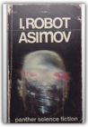
Paperback. No date, edition or printing stated. States "Reprinted 1968, 1969 (twice). Cover halfway separated from spine, but no marks inside.from
Info Box: The Catalogue

Make Way For Ducklings

Structure and Interpretation of Computer Programs, Second Edition

Tales from Watership Down

the All-New Adventures of Fiver, Hazel, BigWig, Dandelion, and The Legendary El-Ahrairah. In one of the most enduring classics of contemporary literature, author Richard Adams enthralled millions of readers by creating a glorious world of danger and discovery at once uniquely strange and strikingly similar to our own. Come back now to this remarkable society hidden beneath the tall grasses and open fields; to old friends and new heroes whose courage and tenacity are tested at every turn by predatory nature and the short-sighted cruelties of man. Come back to the excitement and enchantment, to the heartsoaring wonder of a place called Watership Down. Aeschylus I: Oresteia: Agamemnon, The Libation Bearers, The Eumenides
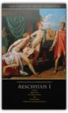
Aeschylus, David Grene, Richmond Lattimore
"These authoritative translations consign all other complete collections to the wastebasket."—Robert Brustein, The New Republic"This is it. No qualifications. Go out and buy it everybody."—Kenneth Rexroth, The Nation "The translations deliberately avoid the highly wrought and affectedly poetic; their idiom is contemporary....They have life and speed and suppleness of phrase."—Times Education Supplement "These translations belong to our time. A keen poetic sensibility repeatedly quickens them; and without this inner fire the most academically flawless rendering is dead."—Warren D. Anderson, American Oxonian "The critical commentaries and the versions themselves...are fresh, unpretentious, above all, functional."—Commonweal "Grene is one of the great translators."—Conor Cruise O'Brien, London Sunday Times "Richmond Lattimore is that rara avis in our age, the classical scholar who is at the same time an accomplished poet."—Dudley Fitts, New York Times Book Review Compilers: Principles, Techniques, and Tools

Essential Cell Biology: An introducton to the Molecular Biology of the Cell
Saves work for teachers — motivates students Now a new introductory text explains cell biology at a level that is easy to grasp for students with a minimal knowledge of biology. The detailed, easy-to-follow text provides students with important background information and the basics necessary to understand cell biology. Teachers can spend less time explaining fundamentals and can focus on more sophisticated concepts. In addition, a profusion of detailed step-by-step full-color diagrams, electron micrographs and photographs reveal and clarify important principles and processes. Written by the authors of a renowned classic This new volume is the work of the same exceptional team who wrote the groundbreaking and universally acclaimed text Molecular Biology of the Cell, now in its Third Edition. The brand-new Essential Cell Biology was written in response to many professors who expressed a need for an introductory textbook for undergraduates that was not as difficult as texts for advanced undergraduate and graduate students. In Essential Cell Biology, early chapters review basic concepts in chemistry and biochemistry to provide the necessary understanding of the essential processes and mechanisms covered later in the text. The full-color schematics have been meticulously constructed specifically for students taking a basic course. — Problems and answers complement the text and stimulate the student's curiosity. — Quick questions within each chapter enable students to instantly review what they have just read. — End-of-chapter self-tests of more challenging questions letstudents gauge their grasp of the material and whet their appetite for more information. — Easy-to-understand panels illuminate the principles of microscopy, the composition of biological macromolecules, the basis of hydrophobicity, the glycolytic pathway, principles of genetics, and many more topics. — Lavish full-color art work and many color photographs and electron micrographs enliven and illustrate the text. — A detailed glossary helps students master the specialized vocabulary of modern biology. An easy-to-grasp introduction to cell biology The new text has been carefully geared to introductory students, without any sacrifice of scientific rigor. The book's conceptual approach, in which the essential facts are presented in their biological context, is ideal for engaging and motivating students new to molecular and cell biology. The book is written especially for undergraduates in biological sciences, but its content can be easily understood and absorbed by advanced high-school students who need a basic introduction to the essential topics in modern biology. Here are some of the highlights of the coverage: — A superb chapter on proteins takes students step by step from the basic construction of protein molecules to the construction of the protein machines that drive cellular processes. — Coverage of genetic variation and recombinant DNA technology offers students an easy-to-understand introduction to the techniques at the frontiers of biological research. — The text is enlivened and enriched throughout with examples of practical applications of the basic biological principles presented. — Explanations of cell biological processes also show at themolecular level how cancers can arise when the processes go out of control. — Fully up-to-date chapters on intracellular membrane traffic, the cytoskeleton, the cell cycle and signal transduction provide a state-of-the-art perspective on these cutting-edge fields at an introductory level. — All the illustrations are available on CD-ROM — enabling instructors to put together individualized presentations in just a few minutes. — A Test Bank offers multiple-choice and short-answer questions on each chapter. — Slide set — Transparencies Fieldbook: Boy Scouts of America

Nordic Knitting Traditions: Knit 25 Scandinavian, Icelandic and Fair Isle Accessories

Traditional Scandinavian and Icelandic designs are given new life in the projects found in Nordic Knitting Traditions. 25 projects feature original floral, star, feather and geometric motifs, all knit in fresh and modern colors. With a diverse collection of hats, tams, mittens, gloves, socks, knee-highs and legwarmers, you'll find plenty of jaw-dropping, colorful accessories to knit for yourself and the ones you love. Inside: Thoughtful construction and full-color charts make these designs easy to knit.Variations for knitting mittens and gloves in two ways and lengthening socks into knee-highs, as well as fully charted alternative colorways, allow you to achieve customized looks.Complete the Look" instructions guide you to patterns that match, making it easy to create coordinating accessories.Tips and tricks for sizing, construction and stress-free knitting help you knit items that will become family heirlooms.Nordic Knitting Traditions celebrates the roots of stranded knitting with inspiring designs and elegant colorways. Start knitting your own piece of history today. " The Lost Explorer : Finding Mallory On Mount Everest

On June 8, 1924, George Leigh Mallory and Andrew "Sandy" Irvine were last seen climbing toward the summit of Mount Everest. Clouds soon closed around them, and they vanished into history. Ever since, mountaineers have wondered whether they reached the summit twenty-nine years before Edmund Hillary and Tenzing Norgay. On May 1, 1999, Conrad Anker, one of the world's strongest mountaineers, discovered Mallory's body lying facedown, frozen into the scree and naturally mummified at 27,000 feet on Everest's north face. The condition of the body, as well as the artifacts found with Mallory, including goggles, an altimeter, and a carefully wrapped bundle of personal letters, are important clues in determining his fate. Seventeen days later, Anker free-climbed the Second Step, a 90-foot sheer cliff that is the single hardest obstacle on the north ridge. The first expedition known to have conquered the Second Step, a Chinese team in 1975, had tied a ladder to the cliff, leaving unanswered the question of whether Mallory could have climbed it in 1924. Anker's climb was the first test since Mallory's of the cliff's true difficulty. In treacherous conditions, Anker led teammate Dave Hahn from the Second Step to the summit. Reflecting on the climb, Anker explains why he thinks Mallory and Irvine failed to make the summit, but at the same time, he expresses his awe at Mallory's achievement with the primitive equipment of the time. Stunningly handsome andcharismatic, Mallory charmed everyone who met him during his lifetime and continues to fascinate mountaineers today. He was an able writer, a favorite of the Bloomsbury circle, and a climber of legendary gracefulness. "The Lost Explorer" is the remarkable story of this extraordinarily talented man and of the equally talented modern climber who spearheaded a discovery that may ultimately help solve the mystery of Mallory's disappearance. Lysistrata/The Acharnians/The Clouds

@PussyWhip What’s something we can leverage against men? What’s the one thing we’re good for again? It’s on the tip of my tongue. From Twitterature: The World's Greatest Books in Twenty Tweets or Less The Knights; Peace; The Birds; The Assembly Women; Wealth

After Thought: The Computer Challenge To Human Intelligence

Track of the Cat

Winter Trails Vermont and New Hampshire, 2nd: The Best Cross-Country Ski & Showshoe Trails

Lonely Planet Hawaii
Our Promise You can trust our travel information because Lonely Planet authors visit the places we write about, each and every edition. We never accept freebies for positive coverage, and you can rely on us to tell it like we see it. Inside This Book… 8 fun-and-sun loving authors 24 itineraries 179 beaches Miles of hiking trails Inspirational photos Clear, easy-to-use maps Outdoor activities chapter In-depth background Comprehensive planning tools Easy-to-read layout More Everyday Wisdom: Trail-Tested Advice from the Experts
More Everyday Wisdom provides brilliant improvisations for worst-case scenarios and advice to avoid the most common (and obscure) problems. These backcountry basics will help you plan your trips, become a better problem-solver, and learn to how to stay comfortable. Matter in Equilibrium: Statistical Mechanics and Thermodynamics includes CD-ROM
Nucleic Acids in Chemistry and Biology

Patterns In The Sand: Computers, Complexity, And Everyday Life
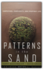
Terry Bossomaier, David Green
Until recently, science has made progress by breaking large systems down into smaller and simpler parts, studying and explaining how these parts operate, and putting them back together again. Although this ”reductionist” approach works amazingly well when we study the atom or the function of a single gene, it hits a brick wall when it comes to vastly complex systems like the brain, or the weather, or the ecosphere. Such systems are just too complicated to yield their secrets to the reductionist approach.The new science of complexity, one of the twentieth centuries greatest contributions to our comprehension of nature, is concerned with treating vastly complicated systems, like the biosphere or the Internet, as holistic systems. Patterns in the Sand discusses this new scientific paradigm that treats life as a natural computation, and shows how this approach translates into ways of dealing with complexity in real life. It shows, for example, how key ideas, such as chaos, criticality, and emergent phenomena, helps us to understand how ants build their nests, how the brain works, why we enact simple routines like getting up in the morning and going to work, and why accidents happen.Using such everyday phenomena as illustrations, Bossomaier and Green take us from the most basic function of the simple Turing computer through the vast interrelationships of the earth’s biota, right up to the search for life on other planets, while providing a new understanding of the complicated, complex, world around us.
Flags of Our Fathers

In February 1945, American Marines plunged into the surf at Iwo Jima—and into history. Through a hail of machine-gun and mortar fire that left the beaches strewn with comrades, they battled to the island's highest peak. And after climbing through a landscape of hell itself, they raised a flag. Now the son of one of the flagraisers has written a powerful account of six very different young men who came together in a moment that will live forever. To his family, John Bradley never spoke of the photograph or the war. But after his death at age seventy, his family discovered closed boxes of letters and photos. In Flags of Our Fathers, James Bradley draws on those documents to retrace the lives of his father and the men of Easy Company. Following these men's paths to Iwo Jima, James Bradley has written a classic story of the heroic battle for the Pacific's most crucial island—an island riddled with Japanese tunnels and 22,000 fanatic defenders who would fight to the last man. But perhaps the most interesting part of the story is what happened after the victory. The men in the photo—three were killed during the battle—were proclaimed heroes and flown home, to become reluctant symbols. For two of them, the adulation was shattering. Only James Bradley's father truly survived, displaying no copy of the famous photograph in his home, telling his son only: "The real heroes of Iwo Jima were the guys who didn't come back." Few books ever have captured the complexity and furor of war and its aftermath as well as Flags of Our Fathers. A penetrating, epic look at a generation at war, this is history told with keen insight, enormous honesty, and the passion of a son paying homage to his father. It is the story of the difference between truth and myth, the meaning of being a hero, and the essence of the human experience of war. Training for Speed, Agility, and Quickness

A Walk in the Woods: Rediscovering America on the Appalachian Trail

A Walk in the Woods showcases Bryson at the height of his comic powers. Meeting up with characters such as Beulah and her fearsome husband, "Bubba T. Flubba," readers risk snakebite and hantavirus to trudge through swollen rivers, traipse up mountainsteps, and develop a new reverence for cream sodas and hot showers. But Bryson also uses his acute powers of observation to conjure a poignant backdrop of silent forests and sparkling lakes, thereby making a gentle but unforgettable plea for the ecological treasures we are in danger of losing. Fresh, illuminating, and uproariously funny, A Walk in the Woods is travel writing at its very best. Blood River: A Journey to Africa's Broken Heart
The Hero with a Thousand Faces

The first popular work to combine the spiritual and psychological insights of modern psychoanalysis with the archetypes of world mythology, the book creates a roadmap for navigating the frustrating path of contemporary life. Examining heroic myths in the light of modern psychology, it considers not only the patterns and stages of mythology but also its relevance to our lives today—and to the life of any person seeking a fully realized existence. Myth, according to Campbell, is the projection of a culture's dreams onto a large screen; Campbell's book, like Star Wars, the film it helped inspire, is an exploration of the big-picture moments from the stage that is our world. It is a must-have resource for both experienced students of mythology and the explorer just beginning to approach myth as a source of knowledge. Tolkien: A Look Behind the Lord of the Rings

Spartina

Organic Chemistry of Enzyme-Catalyzed Reactions, Revised Edition, Second Edition
This is a revised edition of a very successful book, which appeals to both academic and industrial markets. Illustrates the organic mechanism associated with each enzyme-catalyzed reaction Makes the connection between organic reaction mechanisms and enzyme mechanisms Compiles the latest information about molecular mechanisms of enzyme reactions Accompanied by clearly drawn structures, schemes, and figures Includes an extensive bibliography on enzyme mechanisms covering the last 30 years Explains how enzymes can accelerate the rates of chemical reactions with high specificity Provides approaches to the design of inhibitors of enzyme-catalyzed reactions Categorizes the cofactors that are appropriate for catalyzing different classes of reactions Shows how chemical enzyme models are used for mechanistic studies Describes catalytic antibody design and mechanism Includes problem sets and solutions for each chapter Written in an informal and didactic style Power Systems Jumping Into Plyometrics Book
Shogun
Green Mountain Club Long Trail Guide: Hiking Vermont's High Ridge

Adventures in Medialand: Behind the News, Beyond the Pundits

Heart of Darkness and The Secret Sharer

BY PRACTICAL SCHOLARSHIP Two of Joseph Conrad's most compelling and haunting works, in which the deepest perceptions and desires of the human heart and mind are explored. EACH ENRICHED CLASSIC EDITION INCLUDES: • A concise introduction that gives readers important background information • A chronology of the author's life and work • A timeline of significant events that provides the book's historical context • An outline of key themes and plot points to help readers form their own interpretations • Detailed explanatory notes • Critical analysis, including contemporary and modern perspectives on the work • Discussion questions to promote lively classroom and book group interaction • A list of recommended related books and films to broaden the reader's experience Enriched Classics offer readers affordable editions of great works of literature enhanced by helpful notes and insightful commentary. The scholarship provided in Enriched Classics enables readers to appreciate, understand, and enjoy the world's finest books to their full potential. SERIES EDITED BY CYNTHIA BRANTLEY JOHNSON Athletic Body in Balance

Physical therapist and sports conditioning expert Gray Cook has proven the effectiveness of his approach through the performances of athletes in the NFL, NBA, NHL, WNBA, and Reebok® University's sports training system. Cook's methods will help you identify functional weaknesses; correct imbalances; explore your potential; and refine sport-specific movement skills such as jumping, kicking, cutting, and turning. You will see where conditioning is breaking down and how to get your body back on track. Whereas other books concentrate on maximizing your strengths, Athletic Body in Balance focuses on exposing and overcoming your weaknesses to form a foundation for long-term training gains. Learn how to maintain what you gain and build on your improvements. Make this comprehensive assessment tool your training guide. Prepare and repair your body for ultimate athletic performance with Athletic Body in Balance. Introduction To Algorithms

The Secret Life of Lobsters: How Fishermen and Scientists Are Unraveling the Mysteries of Our Favorite Crustacean

The Story of Sushi: An Unlikely Saga of Raw Fish and Rice

Trevor Corson takes us behind the scenes at America's first sushi-chef training academy, as eager novices strive to master the elusive art of cooking without cooking. He delves into the biology and natural history of the edible creatures of the sea, and tells the fascinating story of an Indo-Chinese meal reinvented in nineteenth-century Tokyo as a cheap fast food. He reveals the pioneers who brought sushi to the United States and explores how this unlikely meal is exploding into the American heartland just as the long-term future of sushi may be unraveling. The Story of Sushi is at once a compelling tale of human determination and a delectable smorgasbord of surprising food science, intrepid reporting, and provocative cultural history. The Valedictorians
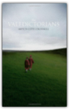
Mitch Cote-Crosskill
The torch bearers of tomorrow are stumbling through the darkness. "The Valedictorians" is an unflinching look at a jaded generation desperately seeking direction. It tells the tale of Sam and Pete, two recently graduated best friends who exit college to enter the "real world" of 21st century America. A harsh adjustment ensues and, as they struggle to cope with crippling doubt and alienation, much about themselves and modern living is illuminated. The survival of each will hinge on how they adapt to the new challenges they face.
Shampoo Planet
Mountaineering

AMC White Mountain Guide, 27th: Hiking Trails in the White Mountain National Forest

More than just trail descriptions, the 27th edition includes: *6 pull-out full-color maps created using GPS technology *distances, times, and elevations *trip planning *what to carry *campgrounds, huts, and shelters *fire regulations *backcountry hazards *White Mountain National Forest information *extensive information on Mt. Washington, New Hampshire's highest peak Southern New Hampshire Trail Guide, 2nd: AMC Guide to Hiking Mt. Monadnock, Mt. Cardigan, and the Lakes Region

Imzadi
See Delphi and Die: A Marcus Didius Falco Mystery

Guns, Germs, and Steel: The Fates of Human Societies

Until around 11,000 b.c., all peoples were still Stone Age hunter/gatherers. At that point, a great divide occurred in the rates that human societies evolved. In Eurasia, parts of the Americas, and Africa, farming became the prevailing mode of existence when indigenous wild plants and animals were domesticated by prehistoric planters and herders. As Jared Diamond vividly reveals, the very people who gained a head start in producing food would collide with preliterate cultures, shaping the modern world through conquest, displacement, and genocide. The paths that lead from scattered centers of food to broad bands of settlement had a great deal to do with climate and geography. But how did differences in societies arise? Why weren't native Australians, Americans, or Africans the ones to colonize Europe? Diamond dismantles pernicious racial theories tracing societal differences to biological differences. He assembles convincing evidence linking germs to domestication of animals, germs that Eurasians then spread in epidemic proportions in their voyages of discovery. In its sweep, Guns, Germs and Steel encompasses the rise of agriculture, technology, writing, government, and religion, providing a unifying theory of human history as intriguing as the histories of dinosaurs and glaciers. Jared Diamond, professor of physiology at the UCLA Medical School, is the author of The Third Chimpanzee, awarded the 1992 Los Angeles Times Science Book Award. He is a regular contributor to Natural History and Discover magazines and lives in Los Angeles. The Third Chimpanzee: The Evolution and Future of the Human Animal

We human beings share 98 percent of our genes with chimpanzees. Yet humans are the dominant species on the planet — having founded civilizations and religions, developed intricate and diverse forms of communication, learned science, built cities, and created breathtaking works of art — while chimps remain animals concerned primarily with the basic necessities of survival. What is it about that two percent difference in DNA that has created such a divergence between evolutionary cousins? In this fascinating, provocative, passionate, funny, endlessly entertaining work, renowned Pulitzer Prize–winning author and scientist Jared Diamond explores how the extraordinary human animal, in a remarkably short time, developed the capacity to rule the world . . . and the means to irrevocably destroy it. Blade Runner

A People Betrayed: November 1918: A German Revolution

Princessa na Kirieshkah: Evlampija Romanova. Sledstvie vedet diletant #15
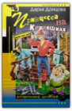
Mrs. Darya A Dontsova
Evlampija Romanova, popala v ocherednuju peredelku. A nachalos' vse s togo, chto na menja napal kakoj-to psih i, pristaviv dulo k visku, velel najti ubijcu... Kurochkorjabskogo. Kogda ja, klacaja zubami ot straha, vernulas' domoj, ocherednoj sjurpriz ne z
Embracing Defeat: Japan in the Wake of World War II

The Bookman's Wake

Janeway is intrigued by the woman — and by the deadly history surrounding the rare volume. Hunted by people willing to kill for the antique tome, a terrified Eleanor escapes and disappears. To find her — and save her — Janeway must unravel the secrets of the book's past and its mysterious maker, for only then can he stop the hand of death from turning another page.... The Bookwoman's Last Fling

When wealthy horse trainer H. R. Geiger dies, Denver bookman Cliff Janeway encounters the legacy of the man's wife, Candice, a true bookwoman who left behind an assortment of rare first-edition children's books. Sent to assess the collection, Janeway soon finds that several titles are missing, replaced by cheap reprints — while other hugely expensive pieces remain. Why would a thief take one priceless book and leave an equally valuable volume on the shelf? Suspecting foul play, Janeway follows the trail of Candice's shadowy past to California's Golden Gate and Santa Anita racetracks, where he signs on as a racehorse hot walker. Eavesdropping on the chatter among the hands, he doesn't like what he hears. And when he goes to the house where Candice died to look for answers, Janeway finds much more than he bargained for. Wittgenstein's Poker: The Story of a Ten-Minute Argument Between Two Great Philosophers

An engaging mix of philosophy, history, biography, and literary detection, Wittgenstein's Poker explores, through the Popper/Wittgenstein confrontation, the history of philosophy in the twentieth century. It evokes the tumult of fin-de-siécle Vienna, Wittgentein's and Popper's birthplace; the tragedy of the Nazi takeover of Austria; and postwar Cambridge University, with its eccentric set of philosophy dons, including Bertrand Russell. At the center of the story stand the two giants of philosophy themselves — proud, irascible, larger than life — and spoiling for a fight. Conspiracy of Fools: A True Story

Forging Democracy: The History of the Left in Europe, 1850-2000

Neither given nor granted, democracy requires conflict, often violent confrontations, and challenges to the established political order. In Europe, Geoff Eley convincingly shows, democracy did not evolve organically out of a natural consensus, the achievement of prosperity, or the negative cement of the Cold War. Rather, it was painstakingly crafted, continually expanded, and doggedly defended by varying constellations of socialist, feminist, Communist, and other radical movements that originally blossomed in the later nineteenth century. Parties of the Left championed democracy in the revolutionary crisis after World War I, salvaged it against the threat of fascism, and renewed its growth after 1945. They organized civil societies rooted in egalitarian ideals which came to form the very fiber of Europe's current democratic traditions. The trajectories of European democracy and the history of the European Left are thus inextricably bound together. Geoff Eley has given us the first truly comprehensive history of the European Left—its successes and failures; its high watermarks and its low tides; its accomplishments, insufficiencies, and excesses; and, most importantly, its formative, lasting influence on the European political landscape. At a time when the Left's influence and legitimacy are frequently called into question, Forging Democracy passionately upholds its vital contribution. The Bacchae of Euripides: A New Translation with a Critical Essay
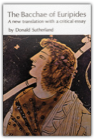
Euripides
This new translation of The Bacchae—that strange blend of Aeschylean grandeur and Euripidean finesse—is an attempt to reproduce for the American stage the play as it most probably was when new and unmutilated in 406 B.C. The achievement of this aim involves a restoration of the "great lacuna" at the climax and the discovery of several primary stage effects very likely intended by Euripides. These effects and controversial questions of the composition and stylistics are discussed in the notes and the accompanying essay.
Euripides IV: Rhesus / The Suppliant Women / Orestes / Iphigenia in Aulis

The Smoke Jumper
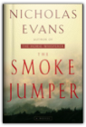
Nicholas Evans
The fire that was to change so many lives so utterly started with a single shaft of lightning. It struck a mountain ridge on a still and moonless night and nestled like a pupa of death in the desiccated heart of an ancient pine. There were witnesses no doubt to this sudden splintering of air and wood, but none that was human. The woman, camped nearby with her group of troubled teenagers, slept on and heard nothing.She has brought them here by court order on a youth program to help them find themselves. But one among them will be lost forever. For soon the cocoon of fire will hatch to engulf the entire mountain and exact its deadly toll. And into this inferno will come ... The Smoke Jumper. His name is Connor Ford and he falls like an angel of mercy from the sky, braving the flames to save the woman he loves but knows he cannot have. For Julia Bishop is the partner of his closest friend, Ed Tully, an ambitious young musician. Julia loves them both but the tragedy on Snake Mountain forces her to choose between them and burns a brand on all their hearts. With his blond, blue-eyed looks and laconic cowboy charm, Connor is the only child of a Montana rancher and a rodeo queen. Until that fateful day, he has been happy to spend his winters nurturing a career as a photographer and his summer vacations with Ed, “smoke jumping” — being dropped by parachute to fight remote forest fires. In the wake of the fire, he embarks on a journey to the dark heart of human suffering, traveling the world’s worst wars and disasters to take photographs that find him fame but never happiness. Reckless of a life he no longer wants, again and again he dares death to take him, until another fateful day on another continent, he must walk through fire once more.... After his two international bestsellers, The Horse Whisperer and The Loop, Nicholas Evans returns with an epic novel of love and loyalty, of guilt and honor. Moving from the towering wilds of the American West to the killing fields of Africa, The Smoke Jumper is the story of three people’s quest for happiness and self-fulfillment, played out against the heroism of fire fighting in the wilderness and photojournalism at the edge of human experience — a mesmerizing adventure for the spirit, told in the grandest tradition. The Schemers Guide

The Norton Anthology of Poetry: Shorter Edition

Paul Revere's Ride

In Paul Revere's Ride, David Hackett Fischer fashions an exciting narrative that offers deep insight into the outbreak of revolution and the emergence of the American republic. Beginning in the years before the eruption of war, Fischer illuminates the figure of Paul Revere, a man far more complex than the simple artisan and messenger of tradition. Revere ranged widely through the complex world of Boston's revolutionary movement—from organizing local mechanics to mingling with the likes of John Hancock and Samuel Adams. When the fateful night arrived, more than sixty men and women joined him on his task of alarm—an operation Revere himself helped to organize and set in motion. Fischer recreates Revere's capture that night, showing how it had an important impact on the events that followed. He had an uncanny gift for being at the center of events, and the author follows him to Lexington Green—setting the stage for a fresh interpretation of the battle that began the war. Drawing on intensive new research, Fischer reveals a clash very different from both patriotic and iconoclastic myths. The local militia were elaborately organized and intelligently led, in a manner that had deep roots in New England. On the morning of April 19, they fought in fixed positions and close formation, twice breaking the British regulars. In the afternoon, the American officers switched tactics, forging a ring of fire around the retreating enemy which they maintained for several hours—an extraordinary feat of combat leadership. In the days that followed, Paul Revere led a new battle— for public opinion—which proved even more decisive than the fighting itself. ] When the alarm-riders of April 18 took to the streets, they did not cry, "the British are coming," for most of them still believed they were British. Within a day, many began to think differently. For George Washington, Thomas Jefferson, John Adams, and Thomas Paine, the news of Lexington was their revolutionary Rubicon. Paul Revere's Ride returns Paul Revere to center stage in these critical events, capturing both the drama and the underlying developments in a triumphant return to narrative history at its finest. Sophocles, The Oedipus Cycle: Oedipus Rex, Oedipus at Colonus, Antigone
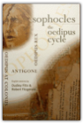
Dudley Fitts, Robert Fitzgerald, Sophocles
English versions of Sophocles’ three great tragedies based on the myth of Oedipus, translated for a modern audience by two gifted poets. Index.
Java in a Nutshell

This book also includes O'Reilly's classic-style, quick-reference material for all of the classes in the essential Java packages, including java.lang, java.io, java.beans java.math, java.net, java.security, java.text, java.util, and javax.crypto. This reference material covers all of the new classes in Java 1.2 and 1.3. Once you've learned Java, you'll keep this book next to your keyboard for handy reference while you program. This book is part of the two-volume set of quick references that every Java programmer needs. It is an essential companion to Java Foundation Classes in a Nutshell, which covers the graphics and graphical user interface APIs in the Java 2 platform, including Swing, AWT, and Java 2D. A third volume, Java Enterprise in a Nutshell, focuses on the Java Enterprise APIs and is of interest to programmers working on server-side or enterprise Java applications. Java in a Nutshell
This book also includes O'Reilly's classic-style, quick-reference material for all of the classes in the essential Java packages, including java.lang, java.io, java.beans java.math, java.net, java.security, java.text, java.util, and javax.crypto. This reference material covers all of the new classes in Java 1.2 and 1.3. Once you've learned Java, you'll keep this book next to your keyboard for handy reference while you program. This book is part of the two-volume set of quick references that every Java programmer needs. It is an essential companion to Java Foundation Classes in a Nutshell, which covers the graphics and graphical user interface APIs in the Java 2 platform, including Swing, AWT, and Java 2D. A third volume, Java Enterprise in a Nutshell, focuses on the Java Enterprise APIs and is of interest to programmers working on server-side or enterprise Java applications. Calculus Two: Linear and Nonlinear Functions

The Complete Walker IV

The eighteen years since the publication of The Complete Walker III have seen revolutionary changes in hiking and camping equipment: developments in waterproofing technology, smaller and more durable stoves, lighter boots, more manageable tents, and a wider array of food options. The equipment recommendations are therefore not merely revised and tweaked, but completely revamped. During these two decades we have also seen a deepening of environmental consciousness. Not only has backpacking become more popular, but a whole ethic of responsible outdoorsmanship has emerged. In this book the authors confidently lead us through these technological, ethical, and spiritual changes. Fletcher and Rawlins’s thorough appraisal and recommendation of equipment begins with a “Ground Plan,” a discussion of general hiking preparedness. How much to bring? What are the ideal clothes, food, boots, and tents for your trip? They evaluate each of these variables in detail—including open, honest critiques and endorsements of brand-name equipment. Their equipment searches are exhaustive; they talk in detail about everything from socks to freeze-dried trail curries. They end as they began, with a philosophical and literary disquisition on the reasons to walk, capped off with a delightful collection of quotes about walking and the outdoor life. After a thoughtful and painstaking analysis of hiking gear from hats to boots, from longjohns to tent flaps, they remind us that ultimately hiking is about the experience of being outdoors and seeing the green world anew. Like its predecessors, The Complete Walker IV is an essential purchase for anyone captivated by the outdoor life. From the Hardcover edition. Tolkien's World from A to Z: The Complete Guide to Middle-Earth

EVERY CHARACTER From Adaldrida Brandybuck to Zaragamba–every Hobbit, Elf, Dwarf, Man, Orc, or other resident of Middle-earth is vividly described and accurately located in proper place and time. EVERY PLACE Colorfully detailed descriptions of geographical entries allow you to pick up the action anywhere in Middle-earth and follow it through all five volumes. EVERY THING From stars and streams to food and flora, everything found in Middle-earth is alphabetically listed and, when necessary, cross-referenced. HERE IS TRULY A MASTER KEY TO TOLKIEN’S MIDDLE-EARTH Penguins, of All People

Emo's Great Story
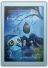
Brendhan Garland
Emo's Great Story is a fun read for the whole family. You'll love EMo, a wonderful groundhog whose dream is to meet The Great Crocodile, lengendary for his good works. Emo's adventure introduces him to new friends and new understandings. Emo learns that the death of ahero doesn't have to end the hero's dream. And, that a dream may come tue when it's least expected.
Machiavelli; the Prince

Mirror Worlds: Or: The Day Software Puts the Universe in a Shoebox...How It Will Happen and What It Will Mean
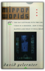
David Gelernter
Technology doesn't flow smoothly; it's the big surprises that matter, and Yale computer expert David Gelernter sees one such giant leap right on the horizon. Today's small scale software programs are about to be joined by vast public software works that will revolutionize computing and transform society as a whole. One such vast program is the "Mirror World."Imagine looking at your computer screen and seeing reality—an image of your city, for instance, complete with moving traffic patterns, or a picture that sketches the state of an entire far-flung corporation at this second. These representations are called Mirror Worlds, and according to Gelernter they will soon be available to everyone. Mirror Worlds are high-tech voodoo dolls: by interacting with the images, you interact with reality. Indeed, Mirror Worlds will revolutionize the use of computers, transforming them from (mere) handy tools to crystal balls which will allow us to see the world more vividly and see into it more deeply. Reality will be replaced gradually, piece-by-piece, by a software imitation; we will live inside the imitation; and the surprising thing is—this will be a great humanistic advance. We gain control over our world, plus a huge new measure of insight and vision. In this fascinating book—part speculation, part explanation—Gelernter takes us on a tour of the computer technology of the near future. Mirror Worlds, he contends, will allow us to explore the world in unprecedented depth and detail without ever changing out of our pajamas. A hospital administrator might wander through an entire medical complex via a desktop computer. Any citizen might explore the performance of the local schools, chat electronically with teachers and other Mirror World visitors, plant software agents to report back on interesting topics; decide to run for the local school board, hire a campaign manager, and conduct the better part of the campaign itself—all by interacting with the Mirror World. Gelernter doesn't just speculate about how this amazing new software will be used—he shows us how it will be made, explaining carefully and in detail how to build a Mirror World using technology already available. We learn about "disembodied machines," "trellises," "ensembles," and other computer components which sound obscure, but which Gelernter explains using familiar metaphors and terms. (He tells us that a Mirror World is a microcosm just like a Japanese garden or a Gothic cathedral, and that a computer program is translated by the computer in the same way a symphony is translated by a violinist into music.) Mirror Worlds offers a lucid and humanistic account of the coming software revolution, told by a computer scientist at the cutting edge of his field. What Came Before He Shot Her Book

The anatomy of a murder, the story of a family in crisis, What Came Before He Shot Her is a powerful, emotional novel full of deep psychological insights, a novel that only the incomparable Elizabeth George could write. The Day the War Ended: May 8, 1945 : Victory in Europe

Junk Genius: Stylish Ways to Reinvent Everyday Objects

Memoirs of a Geisha: A Novel
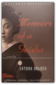
Arthur Golden
A literary sensation and runaway bestseller, this brilliant debut novel tells with seamless authenticity and exquisite lyricism the true confessions of one of Japan's most celebrated geisha.Speaking to us with the wisdom of age and in a voice at once haunting and startlingly immediate, Nitta Sayuri tells the story of her life as a geisha. It begins in a poor fishing village in 1929, when, as a nine-year-old girl with unusual blue-gray eyes, she is taken from her home and sold into slavery to a renowned geisha house. We witness her transformation as she learns the rigorous arts of the geisha: dance and music; wearing kimono, elaborate makeup, and hair; pouring sake to reveal just a touch of inner wrist; competing with a jealous rival for men's solicitude and the money that goes with it. In Memoirs of a Geisha, we enter a world where appearances are paramount; where a girl's virginity is auctioned to the highest bidder; where women are trained to beguile the most powerful men; and where love is scorned as illusion. It is a unique and triumphant work of fiction—at once romantic, erotic, suspenseful—and completely unforgettable. Immunology, Fifth Edition

The Mismeasure of Man
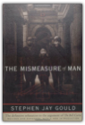
Stephen Jay Gould
The definitive refutation to the argument of The Bell Curve.When published in 1981, The Mismeasure of Man was immediately hailed as a masterwork, the ringing answer to those who would classify people, rank them according to their supposed genetic gifts and limits.Yet the idea of biology as destiny dies hard, as witness the attention devoted to The Bell Curve, whose arguments are here so effectively anticipated and thoroughly undermined. In this edition, Stephen Jay Gould has written a substantial new introduction telling how and why he wrote the book and tracing the subsequent history of the controversy on innateness right through The Bell Curve. Further, he has added five essays on questions of The Bell Curve in particular and on race, racism, and biological determinism in general. These additions strengthen the book's claim to be, as Leo J. Kamin of Princeton University has said, "a major contribution toward deflating pseudo-biological 'explanations' of our present social woes." Advanced Engineering Mathematics
The Art and Craft of Teaching

The Art and Craft of Teaching
Semantics of Programming Languages: Structures and Techniques
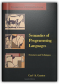
Carl A. Gunter
Semantics of Programming Languages exposes the basic motivations and philosophy underlying the applications of semantic techniques in computer science. It introduces the mathematical theory of programming languages with an emphasis on higher-order functions and type systems. Designed as a text for upper-level and graduate-level students, the mathematically sophisticated approach will also prove useful to professionals who want an easily referenced description of fundamental results and calculi.Basic connections between computational behavior, denotational semantics, and the equational logic of functional programs are thoroughly and rigorously developed. Topics covered include models of types, operational semantics, category theory, domain theory, fixed point (denotational). semantics, full abstraction and other semantic correspondence criteria, types and evaluation, type checking and inference, parametric polymorphism, and subtyping. All topics are treated clearly and in depth, with complete proofs for the major results and numerous exercises.
Real Analysis

The Edge Of The Crazies

As more of the town's prominent citizens start turning up dead, the pressure on Jules keeps rising. It starts to look like this rookie sheriff may not survive the next election...if he lives to see it. AMC's Best Backpacking in New England

Heid maximizes your wilderness experience by selecting loop hikes, conveniently eliminating the need to cross roads or shuttle a car. Overnight optionsincluding camp sites and lean-tosare also listed, as well as tips on safety and gear to better prepare you for a challenging and rewarding backcountry adventure. God Emperor of Dune

Heretics of Dune

This is Book 5 in Dune Chronicles. Children of Dune
But there are those who think the Imperium does not need messiahs... Annapurna
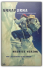
Maurice Herzog
The Works and Days; Theogony; The Shield of Herakles
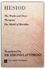
Hesiod
Epic poems by one who has been called the first Greek philosopher and theologian
Walking the Big Wild: From Yellowstone to the Yukon on the Grizzle Bears' Trail

Readings in Computer Architecture

This is much more than a simple collection of papers. The editors have carefully selected the most influential primary sources in specific areas of inquiry that, taken together, present the critical issues of the entire discipline. These include issues in technology, implementation, economics, evaluation methods, instruction set design, instruction level parallelism, dataflow/multithreading, memory systems, input/output systems, single-instruction multiple data parallelism, and multiple-instruction multiple data parallelism. In addition, you'll find the editors' thoughtful, focused introductions to each area, providing the context and background necessary for understanding the significance and lasting impact of these papers. The primary sources and insightful commentary contained in this book provide foundational knowledge for computer architects as well as for those who design supporting system software and compilers. This is an excellent resource for practitioners, instructors, students, and researchers. * Includes more than 50 influential papers spanning four decades of computer architecture research and development * Selected, edited, and introduced by three eminent researchers and educators in the field. * Demonstrates the value of primary sources by showing how forgotten design ideas of the past are often rediscovered when new needs or constraints emerge. * Accompanied by an annually updated companion Web site with links and references to recently published papers, providing a forum for the editors to comment on how recent work continues or breaks with previous work in the field. The Dark Wind

The Sinister Pig
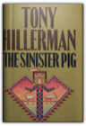
Tony Hillerman
The victim, well dressed but stripped of identification, is found at the edge of the vast Jicarilla Apache natural gas field just inside the jurisdiction of the Navajo Tribal Police, facing Sergeant Jim Chee with a complex puzzle.Why did the Washington office of the FBI snatch custody of this case from its local agents, cover it with secrecy, and call it a hunting accident? What was the victim seeking among the maze of pipelines and pumping stations in America's largest gas field? Was he investigating the embezzlement of billions of dollars from the Indian Tribal royalty trust in the Department of the Interior? On a level nearer to Chee's heart, did the photographs Bernie Manuelito took on an exotic game ranch near the Mexican border reveal something connected with this crime? Did Bernie, once a member of Chee's squad but now a rookie Border Patrol Officer, put herself in terrible danger? Tony Hillerman leads his readers through another of his intricate plots to the solution of this crime, with a cast of vivid characters: a Washington political mogul and his more-or-less renegade pilot; a customs official who bends the rules; a Mexican smuggler with a conscience; and, finally, "Legendary Lieutenant" Joe Leaphorn, now retired, who connects the lines on a dusty old map to find the answers — and the Sinister Pig — among the great scimitar-horned oryx grazing on the historic Tuttle Ranch. King Leopold's Ghost: A Story of Greed, Terror and Heroism

The Quiet Girl: A Novel
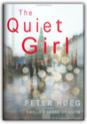
Peter Hoeg
Set in Denmark in the here and now, The Quiet Girl centers around Kaspar Krone, a world-renowned circus clown with a deep love for the music of Johan Sebastian Bach, and an even deeper gambling debt. Wanted for tax evasion and on the verge of extradition, Krone is drafted into the service of a mysterious order of nuns who promise him reprieve from the international authorities in return for his help safeguarding a group of children with mystical abilities—abilities that Krone also shares. When one of the children goes missing, Krone sets off to find the young girl and bring her back, making a shocking series of discoveries along the way about her identity and the true intentions of his young wards. The result is a fast-paced, philosophical thriller blending social realism with the literary fantastic and pitting art and spirituality against corporate interests and nothing less than the will to war by the industrialized world. The Quiet Girl is a masterful, inventive novel that marks the triumphal return of one of the great writers of the international literary world.
Berlin in Panoramen.

Principles of Physical Biochemistry

The Iliad

One of the foremost achievements in Western literature, Homer's Iliad tells the story of the darkest episode of the Trojan War. At its center is Achilles, the greatest warrior-champion of the Greeks, and his conflict with his leader Agamemnon. Interwoven in the tragic sequence of events are powerfully moving descriptions of the ebb and flow of battle, the besieged city of Ilium, the feud between the gods, and the fate of mortals. @RageAgainstTheAchaean Pissed. I am so, so very pissed. First I have to go to this beach. Then I have to kill all these dudes. And NOW – now! This prick stole my biscuit. Who does that? Am I right? Can’t resolve this problem on my own – calling Mom! From Twitterature: The World's Greatest Books in Twenty Tweets or Less Computability and Complexity Theory

Alpine Climbing: Techniques to Take You Higher
Chemical Kinetics and Reaction Dynamics

24 Hours

24 Hours begins with the perfect family. On the perfect night. About to become trapped in the perfect crime. Will Jennings is a successful young doctor in Jackson, Mississippi, with a thriving practice, a beautiful wife, and a five-year-old daughter he loves beyond measure. But Will and his family are being watched by a con man and psychopath who may be a genius. A man who has crafted the unbeatable crime. A man who has never been caught and whose victims have never talked to the police. A man whose life's work strikes at the heart of every family's unspoken fear: the unstoppable kidnapping. But this man has never met the likes of Will and Karen Jennings. Voices: An Inspector Erlendur Novel
The Christmas rush is at its peak in a grand Reykjavík hotel when Inspector Erlendur is called in to investigate a murder. The hotel Santa has been stabbed to death, and Erlendur and his fellow detectives find no shortage of suspects between the hotel staff and the international travelers staying for the holidays. As Christmas Day approaches, Erlendur must deal with his difficult daughter, pursue a possible romantic interest, and untangle a long-buried web of malice and greed to find the murderer. Voices is a brutal, soulful noir from the chilly shores of Iceland. Arctic Chill: An Inspector Erlendur Novel

On an icy January day, the Reykjavik police are called to a block of apartments where a body has been found in the garden: a young, dark-skinned boy is frozen to the ground in a pool of blood. Erlendur and his team embark on their investigation and soon unearth tensions simmering beneath the surface of Iceland’s outwardly liberal, multicultural society. Meanwhile, the boy’s murder forces Erlendur to confront the tragedy in his own past. Master crime writer Arnaldur Indridason's Arctic Chill renders a vivid portrait of Iceland's brutal, little-known culture wars in a taut, fast-paced police procedural. The Two Towers Ace Science Fiction Classic A-5 Complete & Unabridged

While Standing on One Foot: Puzzle Stories and Wisdom Tales from the Jewish Tradition
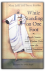
Nina Jaffe, Steven J. Zeitlin, John Segal
Calling on thousands of years of Jewish folktales, legends, rabbinical stories and literature, the authors show the wit and wisdom that are the cornerstones of the Jewish tradition. Posed as a question, each story turns on a conundrum that young readers can try to solve. The solutions are supplied within the tales. Illustrations.
The Ghost Map: The Story of London's Most Terrifying Epidemic and How It Changed Science, Cities, and the Modern World
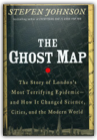
Steven Johnson
From the dynamic thinker routinely compared to Malcolm Gladwell, E. O. Wilson, and James Gleick, The Ghost Map is a riveting page-turner with a real-life historical hero that brilliantly illuminates the intertwined histories of the spread of viruses, rise of cities, and the nature of scientific inquiry. These are topics that have long obsessed Steven Johnson, and The Ghost Map is a true triumph of the kind of multidisciplinary thinking for which he's become famous-a book that, like the work of Jared Diamond, presents both vivid history and a powerful and provocative explanation of what it means for the world we live in.The Ghost Map takes place in the summer of 1854. A devastating cholera outbreak seizes London just as it is emerging as a modern city: more than 2 million people packed into a ten-mile circumference, a hub of travel and commerce, teeming with people from all over the world, continually pushing the limits of infrastructure that's outdated as soon as it's updated. Dr. John Snow—whose ideas about contagion had been dismissed by the scientific community—is spurred to intense action when the people in his neighborhood begin dying. With enthralling suspense, Johnson chronicles Snow's day-by-day efforts, as he risks his own life to prove how the epidemic is being spread. When he creates the map that traces the pattern of outbreak back to its source, Dr. Snow didn't just solve the most pressing medical riddle of his time. He ultimately established a precedent for the way modern city-dwellers, city planners, physicians, and public officials think about the spread of disease and the development of the modern urban environment. The Ghost Map is an endlessly compelling and utterly gripping account of that London summer of 1854, from the microbial level to the macrourban-theory level—including, most important, the human level. Watch a QuickTime trailer for this book. Principal Component Analysis

Principles of Neural Science
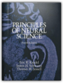
Eric Kandel, James Schwartz, Thomas Jessell
A Doody's Core Title for 2011!5 STAR DOODY'S REVIEW! "This is a simply wonderful book that makes accessible in one place all the details of how the neuron and brain work. The writing is clear. The drawings are elegant and educational. The book is a feast for both the eye and mind. The richness, the beauty, and the complexity of neuroscience is all captured in this superb book."—Doody's Review Service Now in resplendent color, the new edition continues to define the latest in the scientific understanding of the brain, the nervous system, and human behavior. Each chapter is thoroughly revised and includes the impact of molecular biology in the mechanisms underlying developmental processes and in the pathogenesis of disease. Important features to this edition include a new chapter - Genes and Behavior; a complete updating of development of the nervous system; the genetic basis of neurological and psychiatric disease; cognitive neuroscience of perception, planning, action, motivation and memory; ion channel mechanisms; and much more. Neue Bahnhofe in Berlin

Red Diapers: GROWING UP IN THE COMMUNIST LEFT
Red Diapers is the first anthology of autobiographical writings by the children of American communists. These memoirs, short stories, and poems reflect the joys and perils of growing up in a subculture defined by its opposition to society's most deeply held values. How red diaper children have come to terms with their political inheritance is the theme of this compelling anthology. Some contributors have fond memories of family activism, others recall the past with ambivalence or even pain. The authors range in age from their twenties to their eighties. Some, such as Watergate reporter Carl Bernstein and sixties activist Bettina Aptheker, are widely known themselves; some are the children of well-known American leftists, including Jeff Lawson, son of blacklisted screenwriter John Howard Lawson, and Robert Meeropol, son of Ethel and Julius Rosenberg. in disparate voices, the contributors elaborate on how their parents attempted to pass on to them the torch of radical politics. Object-Oriented Programming in COMMON LISP: A Programmer's Guide to CLOS

New England Bouldering
Lincoln Woods, RI Hammond Pond, MA The Hideaway and Happy Valley, MA Farley, MA Pawtuckaway, NH Rumney, NH Smuggler's Notch, VT McKenzie Pond, NY Quinn's Book

The Practice of Programming
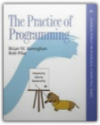
Brian W. Kernighan, Rob Pike
Provides advice, real-world examples in C, C++, Java, and a variety of special purpose languages. Includes debugging, testing, performance, portability, design, interfaces, style, and notation. Softcover. DLC: Computer programming.
C Programming Language

Philosophy Of Mind

Animal, Vegetable, Miracle: A Year of Food Life
"As the U.S. population made an unprecedented mad dash for the Sun Belt, one carload of us paddled against the tide, heading for the Promised Land where water falls from the sky and green stuff grows all around. We were about to begin the adventure of realigning our lives with our food chain. "Naturally, our first stop was to buy junk food and fossil fuel. . . ." Hang on for the ride: With characteristic poetry and pluck, Barbara Kingsolver and her family sweep readers along on their journey away from the industrial-food pipeline to a rural life in which they vow to buy only food raised in their own neighborhood, grow it themselves, or learn to live without it. Their good-humored search yields surprising discoveries about turkey sex life and overly zealous zucchini plants, en route to a food culture that's better for the neighborhood and also better on the table. Part memoir, part journalistic investigation, Animal, Vegetable, Miracle makes a passionate case for putting the kitchen back at the center of family life and diversified farms at the center of the American diet. "This is the story of a year in which we made every attempt to feed ourselves animals and vegetables whose provenance we really knew . . . and of how our family was changed by our first year of deliberately eating food produced from the same place where we worked, went to school, loved our neighbors, drank the water, and breathed the air." Maine Mountain Guide, 10th: AMC'S Comprehensive Guide to Hiking Trails of Maine, Featuring Baxter State Park and Acadia National Park

Introductory Real Analysis
Principles of Biochemistry

A Noble Radiance

In A Noble Radiance a new landowner is summoned urgently to his house not far from Venice when workmen accidentally unearth a macabre grave. The human corpse is badly decomposed, but a ring found nearby proves to be a first clue that reopens an infamous case of kidnapping involving one of Venice's most aristocratic families. Only Commissario Brunetti can unravel the clues and find his way into both the heart of patrician Venice and that of a family grieving for their abducted son. Dressed for Death

Blood from a Stone
Friends in High Places

Donna Leon?s sophisticated Commissario Brunetti series has won her legions of fans over the years. In Friends in High Places, Brunetti is visited by a young bureaucrat investigating the lack of official approval for the building of Brunetti?s apartment years before. What began as a red tape headache ends in murder when the bureaucrat is found dead after a mysterious fall from a scaffold. Brunetti starts an investigation that will take him into unfamiliar and dangerous areas of Venetian life, and will reveal, once again, what a difference it makes to have friends in high places. About Face
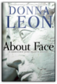
Donna Leon
Donna Leon’s eighteen novels have won her countless fans, heaps of critical acclaim, and a place among the top ranks of international crime writers. Through the warm-hearted, perceptive, and principled Commissario Guido Brunetti, Leon’s best-selling books have explored Venice in all its aspects: history, tourism, high culture, food, family, but also violent crime and political corruption.In About Face, Leon returns to one of her signature subjects: the environment, which has reached a crisis in Italy. Incinerators across the south of Italy are at full capacity, burning who-knows-what and releasing unacceptable levels of dangerous air pollutants, while in Naples, enormous garbage piles grow in the streets. In Venice, with the polluted waters of the canals and a major chemical complex across the lagoon, the issue is never far from the fore. Environmental concerns become significant in Brunetti’s work when an investigator from the Carabiniere, looking into the illegal hauling of garbage, asks for a favor. But the investigator is not the only one with a special request. His father-in-law needs help and a mysterious woman comes into the picture. Brunetti soon finds himself in the middle of an investigation into murder and corruption more dangerous than anything he’s seen before. ULTIMATE—The First Four Decades
The Dance of Intimacy
This Is Your Brain on Music: The Science of a Human Obsession

In this groundbreaking union of art and science, rocker-turned-neuroscientist Daniel J. Levitin (The World in Six Songs) explores the connection between music, its performance, its composition, how we listen to it, why we enjoy it, and the human brain. Drawing on the latest research and on musical examples ranging from Mozart to Duke Ellington to Van Halen, Levitin reveals: How composers produce some of the most pleasurable effects of listening to music by exploiting the way our brains make sense of the worldWhy we are so emotionally attached to the music we listened to as teenagers, whether it was Fleetwood Mac, U2, or Dr. DreThat practice, rather than talent, is the driving force behind musical expertiseHow those insidious little jingles (called earworms) get stuck in our headTaking on prominent thinkers who argue that music is nothing more than an evolutionary accident, Levitin poses that music is fundamental to our species, perhaps even more so than language. A Los Angeles Times Book Award finalist, This Is Your Brain on Music will attract readers of Oliver Sacks, as it is an unprecedented, eye-opening investigation into an obsession at the heart of human nature. Moneyball: The Art of Winning an Unfair Game

"I wrote this book because I fell in love with a story. The story concerned a small group of undervalued professional baseball players and executives, many of whom had been rejected as unfit for the big leagues, who had turned themselves into one of the most successful franchises in Major League Baseball. But the idea for the book came well before I had good reason to write it—before I had a story to fall in love with. It began, really, with an innocent question: how did one of the poorest teams in baseball, the Oakland Athletics, win so many games?" With these words Michael Lewis launches us into the funniest, smartest, and most contrarian book since, well, since Liar's Poker. Moneyball is a quest for something as elusive as the Holy Grail, something that money apparently can't buy: the secret of success in baseball. The logical places to look would be the front offices of major league teams, and the dugouts, perhaps even in the minds of the players themselves. Lewis mines all these possibilities—his intimate and original portraits of big league ballplayers are alone worth the price of admission—but the real jackpot is a cache of numbers—numbers!—collected over the years by a strange brotherhood of amateur baseball enthusiasts: software engineers, statisticians, Wall Street analysts, lawyers and physics professors. What these geek numbers show—no, prove—is that the traditional yardsticks of success for players and teams are fatally flawed. Even the box score misleads us by ignoring the crucial importance of the humble base-on-balls. This information has been around for years, and nobody inside Major League Baseball paid it any mind. And then came Billy Beane, General Manager of the Oakland Athletics. Billy paid attention to those numbers —with the second lowest payroll in baseball at his disposal he had to—and this book records his astonishing experiment in finding and fielding a team that nobody else wanted. Moneyball is a roller coaster ride: before the 2002 season opens, Oakland must relinquish its three most prominent (and expensive) players, is written off by just about everyone, and then comes roaring back to challenge the American League record for consecutive wins. In a narrative full of fabulous characters and brilliant excursions into the unexpected, Michael Lewis shows us how and why the new baseball knowledge works. He also sets up a sly and hilarious morality tale: Big Money, like Goliath, is always supposed to win...how can we not cheer for David? "One of the best baseball—and management—books out....Deserves a place in the Baseball Hall of Fame."—Forbes Introductory Quantum Mechanics

The Call of the Wild
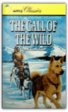
Jack London
One of the most popular and exciting adventure stories is now being reissued with vibrant, realistic paintings by a highly acclaimed artist and an introduction by award-winning author, Gary Paulsen. First published in 1903, this striking reissue is as relevant today as it was when it was first published. Black-and-white illustrations.
How to Rock Climb!, 4th

Daphnis and Chloe

Rock Climbing: Mastering Basic Skills
*Author is an American Mountain Guide Association (AMGA) certified rock guide and instructor *Learning exercises reinforce key skills *Step-by-step technique illustrated in over 150 photos Craig Luebben has taught rock climbing basics to hundreds of clients and has conducted self-rescue clinics across the U.S. Here he presents the most common foot positions, hand grips, and body positions and how to use them precisely, from the smear to the crimp to the twistlock. Going beyond static moves, he emphasizes a dynamic style of movement for the greatest climbing efficiency—a style that makes the most of your strength and your time on the rock. With an emphasis on safety and how to stay within your abilities, Luebben teaches how to evaluate potential hazards and then avoid them. Topics addressed include: risk management, face climbing, crack climbing, gear, knots, anchors, belaying, toproping, sport climbing, trad climbing, multi-pitch free climbs, rappelling, aid climbing, bouldering, training, and self-rescue. Big Trouble: A Murder in a Small Western Town Sets Off a Struggle for the Soul of America
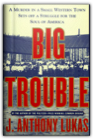
J. Anthony Lukas
From the author of Common Ground — one of the most acclaimed books of recent years — comes a grand narrative of the United States as it charged, full of hope and trepidation, into the twentieth century.J. Anthony Lukas, a masterful storyteller, tells a mesmerizing tale — of a terrible murder, a great trial, and the struggle they set off for the soul of America. Big Trouble begins on a snowy evening at Christmas time 1905 in the little town of Caldwell, Idaho, to which the state's former governor, Frank Steunenberg, had returned to head his family bank while contemplating his political future. As he walked home that night, he sensed all about him the bold, exuberant, unashamedly acquisitive spirit of Caldwell's young entrepreneurs, who — as his brother had written — were "here for the money." Like so many in the West at that time, these brothers believed their prospects for enriching themselves were limitless, that the future opened wide before them. ANd yet the governor suffered premonitions that he and his neighbors weren't fully in control of their own destiny, that something malign threatened their well-being. Now, as he followed the plume of his frozen breath, his boots crunching eight inches of freshly frozen snow, he turned through his garden gate and a bomb attached to the gatepost blew him "into eternity." Pyramid

Castle

City: A Story of Roman Planning and Construction

Unbuilding
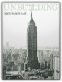
David Macaulay
This fictional account of the dismantling and removal of the Empire State Building describes the structure of a skyscraper and explains how such an edifice would be demolished.
Mill
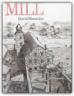
David Macaulay
The mills at Wicksbridge are imaginary, but their planning, construction, and operation are quite typical of mills developed in New England throughout the nineteenth century.
The Return of the Dancing Master

It would be nearly two hours before he died. As if in a borderland of horror between the nagging pain and the hopeless will to live, he was taken back in time, to the occasion when he engaged the fate that had now caught up with him.—from The Return of the Dancing Master December 12, 1945. Nazi Germany lies in ruins as a British warplane lands in Buckeburg. A man carrying a small black bag quickly disembarks and travels to Hameln, where he disappears behind the prison gates. Early the next day, nine male and three female war criminals are hanged. Fifty-four years later, retired policeman Herbert Molin is found brutally slaughtered on his remote farm in Härjedalen, Sweden. At the murder scene, the police discover strange tracks in the blood on the floor...as if someone had been practicing the tango. Stefan Lindman, a young police officer on extended sick leave, hears about the murder of his former colleague and decides to investigate it himself. Lindman's inquiry becomes increasingly complex and dangerous as he uncovers the links between Herbert Molin's death and a global web of neo-Nazi activity. The Fifth Woman

In an African convent, four nuns and a unidentified fifth woman are brutally murdered—the death of the unknown woman covered up by the local police. A year later in Sweden, Inspector Kurt Wallander is baffled and appalled by two murders. Holger Eriksson, a retired car dealer and bird watcher, is impaled on sharpened bamboo poles in a ditch behind his secluded home, and the body of a missing florist is discovered—strangled and tied to a tree. The only clues Wallander has to go on are a skull, a diary, and a photo of three men. What ensues is a case that will test Wallander’s strength and patience, because in order to discover the reason behind these murders, he will also need to uncover the elusive connection between these deaths and the earlier unsolved murder in Africa of the fifth woman. The Man Who Smiled

The Man Who Smiled begins with Wallander deep in a personal and professional crisis after killing a man in the line of duty; eventually, he vows to quit the Ystad police force for good. Just then, however, a friend who had asked Wallander to look into the death of his father winds up dead himself, shot three times. Ann-Britt Höglund, the department's first female detective, proves to be his best ally as he tries to pierce the smiling façade of his prime suspect, a powerful multinational business tycoon. But just as he comes close to uncovering the truth, the same shadowy threats responsible for the murders close in on Wallander himself. All of Mankell's talents as a master of the modern police procedural—which have earned him legions of fans worldwide—are showcased in The Man Who Smiled, which is the fourth of the eight Wallander books published thus far in English. Faceless Killers

Death In A White Tie

The Path Between the Seas: The Creation of the Panama Canal, 1870-1914

From the Pulitzer Prize-winning author of Truman, here is the national bestselling epic chronicle of the creation of the Panama Canal. In The Path Between the Seas, acclaimed historian David McCullough delivers a first-rate drama of the sweeping human undertaking that led to the creation of this grand enterprise. The Path Between the Seas tells the story of the men and women who fought against all odds to fulfill the 400-year-old dream of constructing an aquatic passageway between the Atlantic and Pacific oceans. It is a story of astonishing engineering feats, tremendous medical accomplishments, political power plays, heroic successes, and tragic failures. Applying his remarkable gift for writing lucid, lively exposition, McCullough weaves the many strands of the momentous event into a comprehensive and captivating tale. Winner of the National Book Award for history, the Francis Parkman Prize, the Samuel Eliot Morison Award, and the Cornelius Ryan Award (for the best book of the year on international affairs), The Path Between the Seas is a must-read for anyone interested in American history, the history of technology, international intrigue, and human drama. Physical Chemistry: A Molecular Approach

Dr. Seuss Goes to War: The World War II Editorial Cartoons of Theodor Seuss Geisel
Feeding the Monster: How Money, Smarts, and Nerve Took a Team to the Top

Feeding the Monster shows what it takes to win a championship, both on and off the field. Seth Mnookin spent mornings in the front office, afternoons in the clubhouse, and evenings in the owners' box. He learned how the Sox persuaded Curt Schilling to sign, why Nomar Garciaparra resented his teammates, and what led to Pedro Martinez's acrimonious exit. He knows the real story behind Theo Epstein's brief departure and witnessed the development of his rift with Larry Lucchino. And in a new epilogue, Mnookin examines the 2006 offseason, including the negotiations for Japanese phenom Daisuke Matsuzaka. In a juicy narrative that is filled with thrilling detail, Feeding the Monster peels back the curtain to show what it means to be a part of a major league sports team today. Hiking Glacier and Waterton Lakes National Parks
Witness to History: The Photographs of Yevgeny Khaldei
Biographical essay by Alexander and Alice Nakhimovsky One of the greatest Soviet treasures to come to light after the end of the cold war is the work of the photographer Yevgeny Khaldei. A staff photographer for the Soviet news agency TASS during World War II, Khaldei produced a tremendous and valuable archive of images. He covered every day of the conflict from the German invasion of the USSR in 1941 to the fall of Berlin in 1945, where he raced to the roof of the burning Reichstag to take his famous photograph of a soldier hoisting the Soviet flag. His unflinching approach, and the moving images that resulted, have led to comparisons with the work of Robert Capa. Khaldei's life was shaped by the triumphs and disasters of the Soviet twentieth century. Yevgeny Khaldei was born in 1917, just months before the Bolshevik Revolution. A year later, as pogroms ravaged the Jewish towns of the Ukraine, his mother was shot and the bullet that killed her lodged in his chest. At the age of eleven he made a crude camera from a cardboard box and his grandmother's spectacles. Before long his images of the heroes of Soviet construction, triumphant steelworkers and stoic farmers, were appearing in the newspaper Pravda. By the end of the war Khaldei was acknowledged as Russia's greatest combat photographer. Born as the Soviet Union was coming into existence, Yevgeny Khaldei has lived through its struggles, triumphs, and eventually its downfall. Eighty years old, Yevgeny Khaldei still resides in Moscow. Being Digital

Ohanian's Physics/Study Guide
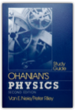
Van E. Neie, Peter D. Riley
Principles of Physics is a textbook for a one year algebra-based introduction physics course. The book is intended for students in the life sciences, the premedical curriculum, the earth and environmental sciences, and the liberal arts.Since for many students this is their first encounter with physics, I introduce new concepts by qualitative and intuitive discussions whenever possible. And to motivate students and to maintain their enthusiasm, I have drawn on examples from sports, biology, medicine, and everyday life, chosen to match the background and special interests of the students. Biological Physics: Energy, Information, Life
Principles of Program Analysis

The Languages of Tolkien's Middle-Earth

Sex and Social Justice

Growing out of Nussbaum's years of work with an international development agency connected with the United Nations, this collection charts a feminism that is deeply concerned with the urgent needs of women who live in hunger and illiteracy, or under unequal legal systems. Offering an internationalism informed by development economics and empirical detail, many essays take their start from the experiences of women in developing countries. Nussbaum argues for a universal account of human capacity and need, while emphasizing the essential role of knowledge of local circumstance. Further chapters take on the pursuit of social justice in the sexual sphere, exploring the issue of equal rights for lesbians and gay men. Nussbaum's arguments are shaped by her work on Aristotle and the Stoics and by the modern liberal thinkers Kant and Mill. She contends that the liberal tradition of political thought holds rich resources for addressing violations of human dignity on the grounds of sex or sexuality, provided the tradition transforms itself by responsiveness to arguments concerning the social shaping of preferences and desires. She challenges liberalism to extend its tradition of equal concern to women, always keeping both agency and choice as goals. With great perception, she combines her radical feminist critique of sex relations with an interest in the possibilities of trust, sympathy, and understanding. Sex and Social Justice will interest a wide readership because of the public importance of the topics Nussbaum addresses and the generous insight she shows in dealing with these issues. Brought together for this timely collection, these essays, extensively revised where previously published, offer incisive political reflections by one of our most important living philosophers. Physics, Volume 2 Expanded

Physics, Volume 1

Animal Farm Publisher: Signet Classics; 50th Anniversary edition

Muscovy and the Mongols: Cross-Cultural Influences on the Steppe Frontier, 1304-1589

Ultimate Techniques and Tactics

This essential handbook contains more than the mechanics of the game; it presents in-depth instruction on using key skills such as throwing, cutting, and catching in game situations. You will -study flight paths to maximize your chances of completing passes; -understand the finer points of catching; and -learn when, where, and how to cut to gain yardage, improve disc position, and maintain possession. You will also stun your opponents when your team employs the offensive and defensive strategies learned in Ultimate Techniques & Tactics. Use your complete knowledge of offensive skills to organize such offenses as zone, stack, weave, and split stack. And when every point matters, create an impenetrable line of defense to save the game. Disrupt your competitors' rhythm and timing using one-on–one, zone, or junk defenses like the clam. Ultimate Techniques & Tactics is the first and best guide to the sport of Ultimate. Use it to become an Ultimate champion! Grand Expectations: The United States, 1945-1974

Now, in Grand Expectations, James T. Patterson has written a highly readable and balanced work that weaves the major political, cultural, and economic events of the period into a superb portrait of America from 1945 through Watergate. Here is an era teeming with memorable events—from the bloody campaigns in Korea and the bitterness surrounding McCarthyism to the assassinations of the Kennedys and Martin Luther King, to the Vietnam War, Watergate, and Nixon's resignation. Patterson excels at portraying the amazing growth after World War II—the great building boom epitomized by Levittown (the largest such development in history) and the baby boom (which exploded literally nine months after V-J Day)—as well as the resultant buoyancy of spirit reflected in everything from streamlined toasters, to big, flashy cars, to the soaring, butterfly roof of TWA's airline terminal in New York. And he shows how this upbeat, can-do mood spurred grander and grander expectations as the era progressed. Of course, not all Americans shared in this economic growth, and an important thread running through the book is an informed and gripping depiction of the civil rights movement—from the electrifying Brown v. Board of Education decision, to the violent confrontations in Little Rock, Birmingham, and Selma, to the landmark civil rights acts of 1964 and 1965. Patterson also shows how the Vietnam War—which provoked LBJ's growing credibility gap, vast defense spending that dangerously unsettled the economy, and increasingly angry protests—and a growing rights revolution (including demands by women, Hispanics, the poor, Native Americans, and gays) triggered a backlash that widened hidden rifts in our society, rifts that divided along racial, class, and generational lines. And by Nixon's resignation, we find a national mood in stark contrast to the grand expectations of ten years earlier, one in which faith in our leaders and in the attainability of the American dream was becoming shaken. The Oxford History of the United States The Oxford History of the United States is the most respected multi-volume history of our nation. The series includes three Pulitzer Prize winners, a New York Times bestseller, and winners of the Bancroft and Parkman Prizes. The Atlantic Monthly has praised it as "the most distinguished series in American historical scholarship," a series that "synthesizes a generation's worth of historical inquiry and knowledge into one literally state-of-the-art book." Conceived under the general editorship of C. Vann Woodward and Richard Hofstadter, and now under the editorship of David M. Kennedy, this renowned series blends social, political, economic, cultural, diplomatic, and military history into coherent and vividly written narrative. Innumeracy: Mathematical Illiteracy and Its Consequences

Beyond Numeracy

Hamlet - A User's Guide

Types and Programming Languages
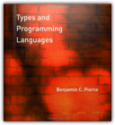
Benjamin C. Pierce
A type system is a syntactic method for automatically checking the absence of certain erroneous behaviors by classifying program phrases according to the kinds of values they compute. The study of type systems—and of programming languages from a type-theoretic perspective — -has important applications in software engineering, language design, high-performance compilers, and security.This text provides a comprehensive introduction both to type systems in computer science and to the basic theory of programming languages. The approach is pragmatic and operational; each new concept is motivated by programming examples and the more theoretical sections are driven by the needs of implementations. Each chapter is accompanied by numerous exercises and solutions, as well as a running implementation, available via the Web. Dependencies between chapters are explicitly identified, allowing readers to choose a variety of paths through the material.The core topics include the untyped lambda-calculus, simple type systems, type reconstruction, universal and existential polymorphism, subtyping, bounded quantification, recursive types, kinds, and type operators. Extended case studies develop a variety of approaches to modeling the features of object-oriented languages.
Advanced Topics in Types and Programming Languages

The Dialogues of Plato

The Botany of Desire: A Plant's-Eye View of the World
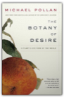
Michael Pollan
The book that helped make Michael Pollan, the New York Times bestselling author of Cooked and The Omnivore’s Dilemma, one of the most trusted food experts in AmericaEvery schoolchild learns about the mutually beneficial dance of honeybees and flowers: The bee collects nectar and pollen to make honey and, in the process, spreads the flowers’ genes far and wide. In The Botany of Desire, Michael Pollan ingeniously demonstrates how people and domesticated plants have formed a similarly reciprocal relationship. He masterfully links four fundamental human desires—sweetness, beauty, intoxication, and control—with the plants that satisfy them: the apple, the tulip, marijuana, and the potato. In telling the stories of four familiar species, Pollan illustrates how the plants have evolved to satisfy humankind’s most basic yearnings. And just as we’ve benefited from these plants, we have also done well by them. So who is really domesticating whom? The Omnivore's Dilemma: A Natural History of Four Meals

Get 15% off when you order 5 or more of this title for your book club. Simply enter the coupon code POLLANOMNIVORE at checkout. This offer does not apply to eBook purchases. This offer applies to only one downloadable audio per purchase. What should we have for dinner?" To one degree or another this simple question assails any creature faced with a wide choice of things to eat. Anthropologists call it the omnivore's dilemma. Choosing from among the countless potential foods nature offers, humans have had to learn what is safe, and what isn't—which mushrooms should be avoided, for example, and which berries we can enjoy. Today, as America confronts what can only be described as a national eating disorder, the omnivore's dilemma has returned with an atavistic vengeance. The cornucopia of the modern American supermarket and fast-food outlet has thrown us back on a bewildering landscape where we once again have to worry about which of those tasty-looking morsels might kill us. At the same time we're realizing that our food choices also have profound implications for the health of our environment. The Omnivore's Dilemma is bestselling author Michael Pollan's brilliant and eye-opening exploration of these little-known but vitally important dimensions of eating in America. Pollan has divided The Omnivore's Dilemma into three parts, one for each of the food chains that sustain us: industrialized food, alternative or "organic" food, and food people obtain by dint of their own hunting, gathering, or gardening. Pollan follows each food chain literally from the ground up to the table, emphasizing our dynamic coevolutionary relationship with the species we depend on. He concludes each section by sitting down to a meal—at McDonald's, at home with his family sharing a dinner from Whole Foods, and in a revolutionary "beyond organic" farm in Virginia. For each meal he traces the provenance of everything consumed, revealing the hidden components we unwittingly ingest and explaining how our taste for particular foods reflects our environmental and biological inheritance. We are indeed what we eat-and what we eat remakes the world. A society of voracious and increasingly confused omnivores, we are just beginning to recognize the profound consequences of the simplest everyday food choices, both for ourselves and for the natural world. The Omnivore's Dilemma is a long-overdue book and one that will become known for bringing a completely fresh perspective to a question as ordinary and yet momentous as What shall we have for dinner? A few facts and figures from The Omnivore's Dilemma: Of the 38 ingredients it takes to make a McNugget, there are at least 13 that are derived from corn. 45 different menu items at Mcdonald’s are made from corn. One in every three American children eats fast food every day. One in every five American meals today is eaten in the car. The food industry burns nearly a fifth of all the petroleum consumed in the United States—more than we burn with our cars and more than any other industry consumes. It takes ten calories of fossil fuel energy to deliver one calorie of food energy to an American plate. A single strawberry contains about five calories. To get that strawberry from a field in California to a plate on the east coast requires 435 calories of energy. Industrial fertilizer and industrial pesticides both owe their existence to the conversion of the World War II munitions industry to civilian uses—nerve gases became pesticides, and ammonium nitrate explosives became nitrogen fertilizers. ... The Cathedral and the Bazaar: Musings on Linux and Open Source by an Accidental Revolutionary

It all started with a series of odd statistics. The leading challenger to Microsoft's stranglehold on the computer industry is an operating system called Linux, the product of thousands of volunteer programmers who collaborate over the Internet. The software behind a majority of all the world's web sites doesn't come from a big company either, but from a loosely coordinated group of volunteer programmers called the Apache Group. The Internet itself, and much of its core software, was developed through a process of networked collaboration. The key to these stunning successes is a movement that has come to be called open source, because it depends on the ability of programmers to freely share their program source code so that others can improve it. In 1997, Eric S. Raymond outlined the core principles of this movement in a manifesto called "The Cathedral and the Bazaar," which was published and freely redistributed over the Internet. Mr. Raymond's thinking electrified the computer industry. He argues that the development of the Linux operating system by a loose confederation of thousands of programmers—without central project management or control—turns on its head everything we thought we knew about software project management. Internet-enabled collaboration and free information sharing, not monopolistic control, is the key to innovation and product quality. This idea was interesting to more than programmers and software project leaders. It suggested a whole new way of doing business, and the possibility of unprecedented shifts in the power structures of the computer industry. The rush to capitalize on the idea of open source started with Netscape's decision to release its flagship Netscape Navigator product under open source licensing terms in early 1998. Before long, Fortune 500 companies like Intel, IBM, and Oracle were joining the party. By August 1999, when the leading Linux distributor, Red Hat Software, made its hugely successful public stock offering, it had become clear that open source was "the next big thing" in the computer industry. This revolutionary book starts out with "A Brief History of Hackerdom"—the historical roots of the open-source movement—and details the events that led to the recognition of the power of open source. It contains the full text of "The Cathedral & the Bazaar," updated and expanded for this book, plus Mr. Raymond's other key essays on the social and economic dynamics of open source software development. Open source is the competitive advantage in the Internet Age. The Cathedral & the Bazaar is a must for anyone who cares about the computer industry or the dynamics of the information economy. Already, billions of dollars have been made and lost based on the ideas in this book. Its conclusions will be studied, debated, and implemented for years to come. Dark Sun: The Making of the Hydrogen Bomb

Escape Routes: Further Adventure Writings of David Roberts

Deborah and Mountain of My Fear

Escape from Lucania : An Epic Story of Survival

Classmates and fellow members of the Harvard Mountaineering Club, Brad Washburn and Bob Bates were two talented young men — handsome, intelligent, and filled with a zest for exploring. Both were ambitious climbers, part of a small group whose first ascents in the great mountain ranges during the 1930s and 1940s changed the face of American mountaineering. Setting their sights on summitting Lucania in the summer of 1937, Washburn and Bates put together a team of four climbers for the expedition. But when Bates and Washburn flew to the Walsh Glacier at the foot of Lucania, they discovered that freakish weather conditions had turned the ice to slush. Their pilot was barely able to take off again alone, and there was no question of returning with the other two climbers or more supplies. Washburn and Bates found themselves marooned on the glacier, more than a hundred miles from help, in forbidding and desolate territory. Eschewing a trek out to the nearest mining town — eighty miles away by air — they decided to press ahead with their expedition. "Escape from Lucania" recounts Washburn and Bates's determined drive toward Lucania's 17,150-foot summit under constant threat ofavalanches, blinding snowstorms, and hidden crevasses. Against awesome odds they became the first to set foot on Lucania's peak, not realizing that their greatest challenge still lay beyond. Nearly a month after being stranded on the glacier and with their supplies running dangerously low, they would have to navigate their way out through uncharted Yukon territory, racing against time as the summer warmth caused rivers to swell and flood to unfordable depths. But even as their situation grew more and more desperate, they refused to give up. "Escape from Lucania" tells this amazing story in thrilling and vivid detail, from the climbers' exultation at reaching the summit to their darkest moments confronting seemingly insurmountable obstacles. It is a tale of awesome adventure and harrowing danger. But above all it is the story of two men of extraordinary spirit, inspiring comradeship, and great courage. Today Washburn and Bates, now in their nineties, are legends in climbing circles. Bates co-led 1938 and 1953 expeditions to K2, the world's second-highest mountain. Washburn, whose record of Alaskan first ascents is unmatched, became founding director of Boston's Museum of Science and is one of the premier mountain photographers in the world. Some of his remarkable images from the 1937 Lucania expedition are included in this book. On the Ridge Between Life and Death: A Climbing Life Reexamined

At age eighteen, Roberts witnessed the death of his first climbing partner in Boulder, Colorado. A few years later, he was the first on the scene of a fatal accident on Mount Washington, New Hampshire. Months afterward, while pioneering a new route in Alaska with the Harvard Mountaineering Club, Roberts watched as his climbing partner and friend fell wordlessly 4,000 feet to a glacier below. Despite these tragedies, Roberts insists that the greatest pleasures in his life have come in the mountains. Several of his challenging routes in Alaska have never been climbed again in the nearly forty years since those first ascents. Roberts continues to climb today, and like all climbers, he still grapples with the cost-benefit calculus of his sport. In a well-known essay that he wrote twenty-five years ago, "Moments of Doubt," Roberts insisted that the benefits of climbing were "worth it." More recently, however, he has gone back to interview relatives and friends of some of his deceased climbing partners. He discovered that even decades later, the wounds had failed to heal, the terrible losses were still acutely felt. And so in this book he comes to a different conclusion about climbing, one that is sure to stir controversy in mountaineering circles and among adventurers generally. Anyone who has ever wondered why mountaineers take the risks that they do will be moved and enlightened by On the Ridge Between Life and Death, as will anyone who appreciates vivid, dramatic storytelling and an unflinchingly honest self-examination of a lifetime spent pursuing a dangerous pastime. The Gunsmith 082

Gaudi: Architect and Artist

Appalachian Trail Guide to Maine
Discrete Mathematics and Its Applications

International Politics on the World Stage: John T. Rourke

Principles of Mathematical Analysis

This text is part of the Walter Rudin Student Series in Advanced Mathematics. An Anthropologist On Mars: Seven Paradoxical Tales

The Handbook of Programming Languages (HPL): Imperative Programming Languages

The Complete Persepolis
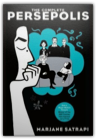
Marjane Satrapi
Here, in one volume: Marjane Satrapi's best-selling, internationally acclaimed memoir-in-comic-strips.Persepolis is the story of Satrapi's unforgettable childhood and coming of age within a large and loving family in Tehran during the Islamic Revolution; of the contradictions between private life and public life in a country plagued by political upheaval; of her high school years in Vienna facing the trials of adolescence far from her family; of her homecoming—both sweet and terrible; and, finally, of her self-imposed exile from her beloved homeland. It is the chronicle of a girlhood and adolescence at once outrageous and familiar, a young life entwined with the history of her country yet filled with the universal trials and joys of growing up. Edgy, searingly observant, and candid, often heartbreaking but threaded throughout with raw humor and hard-earned wisdom—Persepolis is a stunning work from one of the most highly regarded, singularly talented graphic artists at work today. MY BRAIN IS OPEN: The Mathematical Journeys of Paul Erdos
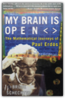
Bruce Schechter
Paul Erdõs, one of the greatest mathematicians of the twentieth century, and certainly the most eccentric, was internationally recognized as a prodigy by age seventeen. Hungarian-born Erdõs believed that the meaning of life was to prove and conjecture. His work in the United States and all over the world has earned him the titles of the century's leading number theorist and the most prolific mathematician who ever lived. Erdõs's important work has proved pivotal to the development of computer science, and his unique personality makes him an unforgettable character in the world of mathematics. Incapable of the smallest of household tasks and having no permanent home or job, he was sustained by the generosity of colleagues and by his own belief in the beauty of numbers.Witty and filled with the sort of mathematical puzzles that intrigued Erdõs and continue to fascinate mathematicians today, My Brain Is Open is the story of this strange genius and a journey in his footsteps through the world of mathematics, where universal truths await discovery like hidden treasures and where brilliant proofs are poetry. Fast Food Nation: The Dark Side of the All-American Meal

Schlosser's myth-shattering survey stretches from California's subdivisions, where the business was born, to the industrial corridor along the New Jersey Turnpike, where many of fast food's flavors are concocted. Along the way, he unearths a trove of fascinating, unsettling truths — from the unholy alliance between fast food and Hollywood to the seismic changes the industry has wrought in food production, popular culture, and even real estate. Holidays on Ice: Stories
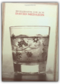
David Sedaris
Holidays on Ice collects six of David Sedaris's most profound Christmas stories into one slender volume perfect for use as a last-minute coaster or ice scraper. This drinking man's companion can be enjoyed by the warmth of a raging fire, the glow of a brilliantly decorated tree, or even in the backseat of a van or police car. It should be read with your eyes, felt with your heart, and heard only when spoken to. It should, in short, behave much like a book. And, oh, what a book it is!
Glacier Travel & Crevasse Rescue: Reading Glaciers, Team Travel, Crevasse Rescue Techniques, Routefinding, Expedition Skills 2nd Edition

Programming Languages: Concepts and Constructs
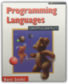
Ravi Sethi
Programming Languages: Concepts and Constructs, Second Edition retains the "character" of the original, emphasizing concepts and how they work together. This classic book has been thoroughly revised to provide readable coverage of the major programming paradigms. Dr. Sethi's treatment of the core concepts of imperative programming in languages like Pascal and C flows smoothly into object-oriented programming in C++ and Smalltalk. The charm of functional languages is illustrated by programs in standard ML and the Scheme dialect of Lisp. Logic programming is introduced using Prolog. Novices, who have been introduced to programming in some language, will learn from this book how related concepts work together while designers and implementers willp be exposed to the major programming paradigms. Example programs from the book are available as source code. These are available by anonymous ftp at ftp://ftp.aw.com/cseng/authors/sethi/pl2e. 0201590654B04062001
Julius Caesar

Antony and Cleopatra

Troilus and Cressida

Hamlet

The "Intellectual Backgrounds" and "Extracts from the Sources" sections, both highly praised, remain as germane as ever. Intellectual Backgrounds includes important readings on melancholy, demonology, the nature of man, and death, including works by Peter de la Primaudaye, Timothy Bright, Lewes Lavater, G. Gifford, Michel de Montaigne, and Heironymous Cardanus. Extracts from the Sources provides pre-Shakespearean accounts of the story of Hamlet, reprinting substantial excerpts from Saxo Grammaticus's Historia Danica and Belleforest's Histoires Tragiques. "Criticism" has been revised to accommodate the most significant recent interpretations of Hamlet while retaining the seminal essays of the First Edition. Twenty-three critical analyses are featured, including those by Samuel Johnson, Johann Wolfgang von Goethe, Samuel Taylor Coleridge, William Hazlitt, A. C. Bradley, D. H. Lawrence, T. S. Eliot, G. Wilson Knight, C. S. Lewis, Harry Levin, Peter J. Seng, Rebecca West, Arnold Kettle, Margaret W. Ferguson, Jacqueline Rose, and William Empson. An updated Selected Bibliography is also included. The Control Revolution: How the Internet is Putting Individuals in Charge and Changing the World We Know
Operating System Concepts, 5th Edition
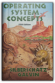
Abraham Silberschatz, Bill Zorbrist, Peter Galvin
This textbook provides coverage of the fundamental concepts which make up the foundation of operating systems and also gives practical experience with a fully functioning instructional operating system called NACHOS. This edition also features new chapters on the history of the operating systems and on computer ethics, as well as a further case study on WindowsNT. Memory management, including modern computer architectures and file system design and implementation are also covered. Common operating systems (MS-DOS, OS/2, Sun OS5 and Macintosh) are used throughout to illustrate concepts and provide examples of performance characteristics.
The Way We Eat: Why Our Food Choices Matter

Five Principles for Making Conscientious Food Choices 1. Transparency: We have the right to know how our food is produced. 2. Fairness: Producing food should not impose costs on others. 3. Humanity: Inflicting unnecessary suffering on animals is wrong. 4. Social Responsibility: Workers are entitled to decent wages and working conditions. 5. Needs: Preserving life and health justifies more than other desires. Peter Singer, the groundbreaking ethicist who "may be the most controversial philosopher alive" (The New Yorker), now sets his critical sights on the food we buy and eat: where it comes from, how it's produced, and whether it was raised humanely. Teaming up once again with attorney Jim Mason, his coauthor on the acclaimed Animal Factories, Singer explores the impact our food choices have on humans, animals, and the environment. In The Way We Eat, Singer and Mason examine the eating habits of three American families with very different diets. They track down the sources of each family's food to probe the ethical issues involved in its production and marketing. What kinds of meat are most humane to eat? Is "organic" always better? Wild fish or farmed? Recognizing that not all of us will become vegetarians, Singer and Mason offer ways to make the best food choices. As they point out: "You can be ethical without being fanatical." Fermat's Enigma: The Epic Quest to Solve the World's Greatest Mathematical Problem

"I have discovered a truly marvelous demonstration of this proposition which this margin is too narrow to contain." With these words, the seventeenth-century French mathematician Pierre de Fermat threw down the gauntlet to future generations. What came to be known as Fermat's Last Theorem looked simple; proving it, however, became the Holy Grail of mathematics, baffling its finest minds for more than 350 years. In Fermat's Enigma—based on the author's award-winning documentary film, which aired on PBS's "Nova"—Simon Singh tells the astonishingly entertaining story of the pursuit of that grail, and the lives that were devoted to, sacrificed for, and saved by it. Here is a mesmerizing tale of heartbreak and mastery that will forever change your feelings about mathematics. Principles of Instrumental Analysis, 5th Edition

The 4000-Footers of the White Mountains

The Trouble With Physics: The Rise of String Theory, The Fall of a Science, and What Comes Next

Sophocles II: Ajax, The Women of Trachis, Electra & Philoctetes

"This is it. No qualifications. Go out and buy it everybody."—Kenneth Rexroth, The Nation "The translations deliberately avoid the highly wrought and affectedly poetic; their idiom is contemporary....They have life and speed and suppleness of phrase."—Times Education Supplement "These translations belong to our time. A keen poetic sensibility repeatedly quickens them; and without this inner fire the most academically flawless rendering is dead."—Warren D. Anderson, American Oxonian "The critical commentaries and the versions themselves...are fresh, unpretentious, above all, functional."—Commonweal "Grene is one of the great translators."—Conor Cruise O'Brien, London Sunday Times "Richmond Lattimore is that rara avis in our age, the classical scholar who is at the same time an accomplished poet."—Dudley Fitts, New York Times Book Review Calculus

You should stop telling people that you will send copies when available. Only the new 0914098911 will be available, starting July16. Glacier-Waterton International Peace Park

Red and the Black: A New Translation Backgrounds and Sources Criticism

Each Norton Critical Edition includes an authoritative text, contextual and source materials, and a wide range of interpretations-from contemporary perspectives to the most current critical theory-as well as a bibliography and a chronology of the author's life and work. Advanced Programming in the UNIX

Rosencrantz and Guildenstern Are Dead
The C++ Programming Language: Special Edition
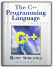
Bjarne Stroustrup
More than three-quarters of a million programmers have benefited from this book in all of its editionsWritten by Bjarne Stroustrup, the creator of C++, this is the world's most trusted and widely read book on C++. For this special hardcover edition, two new appendixes on locales and standard library exception safety (also available at www.research.att.com/~bs/) have been added. The result is complete, authoritative coverage of the C++ language, its standard library, and key design techniques. Based on the ANSI/ISO C++ standard, The C++ Programming Language provides current and comprehensive coverage of all C++ language features and standard library components. For example:abstract classes as interfacesclass hierarchies for object-oriented programmingtemplates as the basis for type-safe generic softwareexceptions for regular error handlingnamespaces for modularity in large-scale softwarerun-time type identification for loosely coupled systemsthe C subset of C++ for C compatibility and system-level workstandard containers and algorithmsstandard strings, I/O streams, and numericsC compatibility, internationalization, and exception safetyBjarne Stroustrup makes C++ even more accessible to those new to the language, while adding advanced information and techniques that even expert C++ programmers will find invaluable. The Elements of Style

The Elements of Style

Component Software: Beyond Object-Oriented Programming
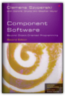
Clemens Szyperski
The author describes his book as a "unique blend of market and technology coverage, broad and fair coverage of current technologies and a deep discussion of real problems with their solutions where known". The first edition won the "Jolt Award" became the leading book on the market to combine explanations of what the key technologies are, how to use them and why they are important in the software market-place, and look at these in terms of both the technical and business issues. The book was also the first to define components and clarify the key questions surrounding them, show how they are key to software design and offer a historical overview of their development.
Computer Networks

Socrates: A Very Short Introduction
About the Series: Combining authority with wit, accessibility, and style, Very Short Introductions offer an introduction to some of life's most interesting topics. Written by experts for the newcomer, they demonstrate the finest contemporary thinking about the central problems and issues in hundreds of key topics, from philosophy to Freud, quantum theory to Islam. An Introduction to Error Analysis: The Study of Uncertainties in Physical Measurements

Why Things Bite Back: Technology and the Revenge of Unintended Consequences
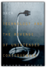
Edward Tenner
In this fascinating book, historian of science Edward Tenner takes a fine-toothed comb to several realms of technological intervention and discovers a resolute pattern of "revenge effects, "paradoxical, ironic consequences of the step s we take supposedly to improve our lives. Whether proliferating technology is fated to lead us to utopia, we can be certain that it has plenty of tricks up its sleeve.
The Fellowship of the Ring

The Lays of Beleriand

A treasure trove of lore for old and new friends of Middle-earth. Enter now, reader, and learn of the hero of the Lay of Leithian. Hear as well of the early years of Turin the Tall, as he journeys through darkness on his quest to find his father. Read of his rescue by Beleg the Brave, and of the dark destiny that haunts their friendship! Only the genius of Tolkien could create a fantasy more real than reality, a reality more fantastic than fantasy! The Letters of J.R.R. Tolkien

J.R.R. Tolkien, cherished author of The Hobbit, The Lord of the Rings, and The Silmarillion, was one of the twentieth century's most prolific letter writers. Over the years he wrote a mass of letters — to his publishers, his family, to friends, and to fans of his books — which record the history and composition of his works and his reaction to subsequent events. By turns thoughtful, impish, scholarly, impassioned, playful, vigorous, and gentle, Tolkien poured his heart and mind into a great stream of correspondence to intimate friends and unknown admirers all over the world. From this collection one sees a mind of immense complexity and many layers — artistic, religious, charmingly eccentric, sentimental, and ultimately brilliant. Now newly expanded with a detailed index, this collection provides an invaluable record that sheds much light on Tolkien's creative genius, his thoughts and feelings about his own work, and the evolution of his grand design for the creation of a whole new world — Middle-earth. The Tolkien Reader

The Fellowship of the Ring

J.R.R. Tolkien, The Hobbit First Printing August 1965 with Lion

The Two Towers

THE FELLOWSHIP OF THE RING - PART ONE

The Fellowship of the Ring

The Hobbit

The Two Towers

THE GREATEST FANTASY EPIC OF OUR TIME The Fellowship is scattered. Some are bracing hopelessly for war against the ancient evil of Sauron. Some are contending with the treachery of the wizard Saruman. Only Frodo and Sam are left to take the accursed One Ring, ruler of all the Rings of Power, to be destroyed in Mordor, the dark realm where Sauron is supreme. Their guide is Gollum, deceitful and lust-filled, slave to the corruption of the Ring. Thus continues the bestselling epic that began in The Fellowship of the Ring, and which reaches its magnificent climax in The Return of the King. Unfinished Tales: The Lost Lore of Middle-earth

The Lord of the Rings
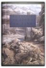
J.R.R. Tolkien
Celebrating the birth of J.R.R. Tolkien, this centenary edition of the classic volume is illustrated with fifty specially commissioned paintings by an artist whose vision matches Tolkien's own. One Ring to rule them all, One Ring to find them, One Ring to bring them all and in the darkness bind them. In ancient times the Rings of Power were crafted by the Elven-smiths, and Sauron, The Dark Lord, forged the One Ring, filling it with his own power so that he could rule all others. But the One Ring was taken from him, and though he sought it throughout Middle-earth, it remained lost to him. After many ages it fell, by chance, into the hands of the hobbit, Bilbo Baggins. From his fastness in the Dark Tower of Mordor, Sauron's power spread far and wide. He gathered all the Great Rings to him, but ever he searched far and wide for the One Ring that would complete his dominion. On his eleventy-first birthday Bilbo disappeared, bequeathing to his young cousin Frodo the Ruling Ring and a perilous quest —- to journey across Middle-earth, deep into the shadow of the Dark Lord, and destroy the Ring by casting it into the Cracks of Doom. The Lord of the Rings tells of the great quest undertaken by Frodo and the Fellowship of the Ring: Gandalf the Wizard, Merry, Pippin, and Sam, Gimli the Dwarf, Legolas the Elf, Boromir of Gondor, and a tall, mysterious stranger called Strider.
The Book of Lost Tales, Part Two

The Lord of the Rings

From his fastness in the Dark Tower of Mordor, Sauron's power spread far and wide. He gathered all the Great Rings to him, but ever he searched far and wide for the One Ring that would complete his dominion. On his eleventy-first birthday Bilbo disappeared, bequeathing to his young cousin Frodo the Ruling Ring and a perilous quest —- to journey across Middle-earth, deep into the shadow of the Dark Lord, and destroy the Ring by casting it into the Cracks of Doom. THE LORD OF THE RINGS tells of the great quest undertaken by Frodo and the Fellowship of the Ring: Gandalf the Wizard, Merry, Pippin, and Sam, Gimli the Dwarf, Legolas the Elf, Boromir of Gondor, and a tall, mysterious stranger called Strider. Letters From Father Christmas

THE SILMARILLION

Sit at the feet of the most beloved storyteller of the 20th century and hear how the world came to be. The Silmarillion is told here in a brilliantly faceted audio production, with all the glory of the First Age itself. Dazzlingly performed by Martin Shaw, it sparkles with the magic of the dawn of time—when Elves and Men roamed a world set spinning through space by the haunting music of supernatural choirs. Slip through the shadows and you, too, may catch the whisper of harp-song on the winds of the high air above the mists of the world. This exclusive audio boxed set of Tolkien's elegant masterpiece is one that will delight fans young and old. It is an extraordinary keepsake to be treasured and listened to again and again. The Shaping of Middle-Earth: The Quenta, the Ambarkanta and the Annals
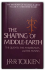
J.R.R. Tolkien, Christopher Tolkien
This is the fourth volume of The History of Middle-earth, edited by Christopher Tolkien, the first two comprising The Book of Lost Tales Parts One and Two, and the third The Lays of Beleriand.It has been given the title The Shaping of Middle-earth because the writings it includes display a great advance in the chronological and geographical structure of the legends of Middle-earth and Valinor. The hitherto wholly unknown "Ambarkanta," or Shape of the World, is the only account ever given of the nature of the imagined Universe, and it is accompanied by diagrams and maps of the world before and after the cataclysms of the War of the Gods and the Downfall of Numenor. The first map of Beleriand, in the North-west of Middle-earth, is also reproduced and discussed. In the "Annals of Valinor" and the "Annals of Beleriand" the chronology of the First Age is given shape; and with these are given the fragments of the translations into Anglo-Saxon made by Aelfwine, the Englishman who voyaged into the True West and came to Tol Eressea, the Lonely Isle, where he learned the ancient history of Elves and Men. Also included are the original "Silmarillion," written in 1926, from which all the later development proceeded, and the "Quenta Noldorinwa" of 1930, the only version of the myths and legends of the First Age that J.R.R. Tolkien completed to their end. As Christopher Tolkien continues editing the unpublished papers that form the bedrock from which The Lord of the Rings and The Silmarillion were quarried, the vastness of his father's accomplishment becomes even more extraordinary. The Return of the Shadow: The History of The Lord of the Rings, Part One

The story in this book ends at the point where J.R.R. Tolkien halted in the story for a long time, as the Company of the Ring, still lacking Legolas and Gimli, stood before the tomb of Balin in the Mines of Moria. The Return of the Shadow is illustrated with reproductions of the first maps and notable pages from the earliest manuscripts. Treason of Isengard: The History of The Lord of the Rings, Part Two

The Book of Lost Tales 1
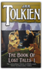
J.R.R. Tolkien, Christopher Tolkien
THE BOOK OF LOST TALES, I, stands at the beginning of the entire conception of Middle-earth and Valinor. Here is the whole, glorious history of Middle-earth that J.R.R. Tolkien brought to mythic and dramatic life with his classic fantasy novels of the Ring Cycle.
The War of the Jewels: The Later Silmarillion, Part Two

The Peoples of Middle-Earth

The Children of Hurin

The Legend of Sigurd and Gudrun

The Guns of August

Linear Algebra: An Introduction to Abstract Mathematics

The Core Performance: The Revolutionary Workout Program to Transform Your Body & Your Life

The intense focus on the muscles of your core—abs, lower back, hips, and thighs—will help you stand taller and prevent the back pain from which most people eventually suffer. The detailed nutrition section guarantees that you'll feed your muscles, starve your fat, and get boundless energy when you need it most. This program is like nothing you've ever seen before—it enables you to totally transform your body in just 12 weeks. The potential is within you, and the power to unleash that potential is within Core Performance. No Shortcuts to the Top: Climbing the World's 14 Highest Peaks
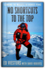
Ed Viesturs, David Roberts
This gripping and triumphant memoir follows a living legend of extreme mountaineering as he makes his assault on history, one 8,000-meter summit at a time.For eighteen years Ed Viesturs pursued climbing’s holy grail: to stand atop the world’s fourteen 8,000-meter peaks, without the aid of bottled oxygen. But No Shortcuts to the Top is as much about the man who would become the first American to achieve that goal as it is about his stunning quest. As Viesturs recounts the stories of his most harrowing climbs, he reveals a man torn between the flat, safe world he and his loved ones share and the majestic and deadly places where only he can go. A preternaturally cautious climber who once turned back 300 feet from the top of Everest but who would not shrink from a peak (Annapurna) known to claim the life of one climber for every two who reached its summit, Viesturs lives by an unyielding motto, “Reaching the summit is optional. Getting down is mandatory.” It is with this philosophy that he vividly describes fatal errors in judgment made by his fellow climbers as well as a few of his own close calls and gallant rescues. And, for the first time, he details his own pivotal and heroic role in the 1996 Everest disaster made famous in Jon Krakauer's Into Thin Air. In addition to the raw excitement of Viesturs’s odyssey, No Shortcuts to the Top is leavened with many funny moments revealing the camaraderie between climbers. It is more than the first full account of one of the staggering accomplishments of our time; it is a portrait of a brave and devoted family man and his beliefs that shaped this most perilous and magnificent pursuit. Mother Night
The Rough Guide to Hawaii
Beautiful Swimmers: Watermen, Crabs and the Chesapeake Bay

Rock Climbs in the White Mountains of New Hampshire, 3rd edition
In addition, this pocket-sized guidebook contains numerous detailed photo-diagrams of the cliffs and rock climbs themselves, written descriptions and historical data about the various routes, and a multitude of archival and modern photographs of famous first ascents in the region, from the 1930s to the present. For extra durability, the guidebook also has a sewn and glued binding, and a plastic laminated synthetic cover. The War Within: America's Battle over Vietnam

The Protest Singer: An Intimate Portrait of Pete Seeger

We see Seeger instilled with a love of music by his parents, both classically trained musicians; as a teenager, hearing real folk music for the first time; and as a young man, singing with Woody Guthrie and with the Weavers. We learn of his harassment by the government for his political beliefs and his testimony before the House Un-American Activities Committee in 1949. And we follow his engagement with civil rights, the peace movement, and the environment—especially his work saving the Hudson River and building the ship Clearwater. He talks ardently about his own music and that of others, and about the power of music to connect people and bind them to a cause. Finally, we meet Toshi, his wife of nearly sixty years, and members of his family, at the house he built on a mountainside in upstate New York. The Protest Singer is as spirited and captivating as its subject—an American icon, celebrating his ninetieth birthday. Bicycling Science
Four Colors Suffice: How the Map Problem Was Solved
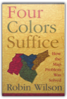
Robin Wilson
On October 23, 1852, Professor Augustus De Morgan wrote a letter to a colleague, unaware that he was launching one of the most famous mathematical conundrums in history—one that would confound thousands of puzzlers for more than a century. This is the amazing story of how the "map problem" was solved.The problem posed in the letter came from a former student: What is the least possible number of colors needed to fill in any map (real or invented) so that neighboring counties are always colored differently? This deceptively simple question was of minimal interest to cartographers, who saw little need to limit how many colors they used. But the problem set off a frenzy among professional mathematicians and amateur problem solvers, among them Lewis Carroll, an astronomer, a botanist, an obsessive golfer, the Bishop of London, a man who set his watch only once a year, a California traffic cop, and a bridegroom who spent his honeymoon coloring maps. In their pursuit of the solution, mathematicians painted maps on doughnuts and horseshoes and played with patterned soccer balls and the great rhombicuboctahedron. It would be more than one hundred years (and countless colored maps) later before the result was finally established. Even then, difficult questions remained, and the intricate solution—which involved no fewer than 1,200 hours of computer time—was greeted with as much dismay as enthusiasm. Providing a clear and elegant explanation of the problem and the proof, Robin Wilson tells how a seemingly innocuous question baffled great minds and stimulated exciting mathematics with far-flung applications. This is the entertaining story of those who failed to prove, and those who ultimately did prove, that four colors do indeed suffice to color any map. The Professor and the Madman: A Tale of Murder, Insanity, and the Making of The Oxford English Dictionary
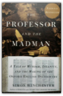
Simon Winchester
"The Professor and the Madman," masterfully researched and eloquently written, is an extraordinary tale of madness, genius, and the incredible obsessions of two remarkable men that led to the making of the "Oxford English Dictionary"—and literary history. The compilation of the "OED," begun in 1857, was one of the most ambitious projects ever undertaken. As definitions were collected, the overseeing committee, led by Professor James Murray, discovered that one man, Dr. W C. Minor, had submitted more than ten thousand. When the committee insisted on honoring him, a shocking truth came to light: Dr. Minor, an American Civil War veteran, was also an inmate at an asylum for the criminally insane.
The Formal Semantics of Programming Languages: An Introduction

Starting with basic set theory, structural operational semantics is introduced as a way to define the meaning of programming languages along with associated proof techniques. Denotational and axiomatic semantics are illustrated on a simple language of while-programs, and fall proofs are given of the equivalence of the operational and denotational semantics and soundness and relative completeness of the axiomatic semantics. A proof of Godel's incompleteness theorem, which emphasizes the impossibility of achieving a fully complete axiomatic semantics, is included. It is supported by an appendix providing an introduction to the theory of computability based on while-programs. Following a presentation of domain theory, the semantics and methods of proof for several functional languages are treated. The simplest language is that of recursion equations with both call-by-value and call-by-name evaluation. This work is extended to lan guages with higher and recursive types, including a treatment of the eager and lazy lambda-calculi. Throughout, the relationship between denotational and operational semantics is stressed, and the proofs of the correspondence between the operation and denotational semantics are provided. The treatment of recursive types - one of the more advanced parts of the book - relies on the use of information systems to represent domains. The book concludes with a chapter on parallel programming languages, accompanied by a discussion of methods for specifying and verifying nondeterministic and parallel programs. The Autobiography of Malcolm X: As Told to Alex Haley
"Extraordinary. A brilliant, painful, important book." TEH NEW YORKTIMES Conversations of Socrates
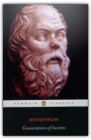
Xenophon, Robin H. Waterfield
After the execution of Socrates in 399 BC, a number of his followers wrote dialogues featuring him as the protagonist and, in so doing, transformed the great philosopher into a legendary figure. Xenophon's portrait is the only one other than Plato's to survive, and while it offers a very personal interpretation of Socratic thought, it also reveals much about the man and his philosophical views. In 'Socrates' Defence' Xenophon defends his mentor against charges of arrogance made at his trial, while the 'Memoirs of Socrates' also starts with an impassioned plea for the rehabilitation of a wronged reputation. Along with 'The Estate-Manager', a practical economic treatise, and 'The Dinner-Party', a sparkling exploration of love, Xenophon's dialogues offer fascinating insights into the Socratic world and into the intellectual atmosphere and daily life of ancient Greece.
The Origins of Autocracy: Ivan the Terrible in Russian History

Heads in the Sand: How the Republicans Screw Up Foreign Policy and Foreign Policy Screws Up the Democrats

"A very serious, thoughtful argument that has never been made in such detail or with such care." —Ezra Klein, staff writer at The American Prospect "Matt Yglesias is one of the smartest voices in the blogosphere. He knows a lot about politics, a lot about foreign policy, and, crucially, is unusually shrewd in understanding how they interact. Here's hoping that his new book will introduce him to an even wider audience. Once you discover him, you'll be hooked." —E. J. Dionne, author of Souled Out: Reclaiming Faith and Politics After the Religious Right and Why Americans Hate Politics "Matthew Yglesias is one of a handful of bloggers that I make a point of reading every day. Heads in the Sand is a smart, vital book that urges Democrats to stop evading the foreign-policy debate and to embrace the old principles of international liberalism—to be right and also to win." —Fred Kaplan, author of Daydream Believers: How a Few Grand Ideas Wrecked American Power "Reading foreign policy tomes is seldom included among life's pleasures, but Yglesias has concocted a startling exception. Heads in the Sand is not just a razor-sharp analysis cum narrative of the politics of national security in general and the Iraq war in particular, it's also an enthralling and often very funny piece of writing. Though he administers strong antidotes to the haplessness of his fellow Democrats and liberals, there's more than a spoonful of sugar to help the medicine go down." —Hendrik Hertzberg, Senior Editor, The New Yorker, and author of Politics: Observations and Arguments Fast-rising political commentator Matthew Yglesias reveals the wrong-headed foreign policy stance of conservatives, neocons, and the Republican Party for what it is—aggressive nationalism. Writing with wit, passion, and keen insight, Yglesias reminds us of the rich tradition of liberal internationalism that, developed by Democrats, was used with great success by both Democratic and Republican administrations for more than fifty years. He provides a starting point for politicians, policymakers, pundits, and citizens alike to return America to its role as leader of a peace-loving and cooperative international community. Zinn & the Art of Road Bike Maintenance
The Future of the Internet—And How to Stop It
IPods, iPhones, Xboxes, and TiVos represent the first wave of Internet-centered products that can’t be easily modified by anyone except their vendors or selected partners. These tethered appliances” have already been used in remarkable but little-known ways: car GPS systems have been reconfigured at the demand of law enforcement to eavesdrop on the occupants at all times, and digital video recorders have been ordered to self-destruct thanks to a lawsuit against the manufacturer thousands of miles away. New Web 2.0 platforms like Google mash-ups and Facebook are rightly toutedbut their applications can be similarly monitored and eliminated from a central source. As tethered appliances and applications eclipse the PC, the very nature of the Internetits generativity,” or innovative characteris at risk. The Internet’s current trajectory is one of lost opportunity. Its salvation, Zittrain argues, lies in the hands of its millions of users. Drawing on generative technologies like Wikipedia that have so far survived their own successes, this book shows how to develop new technologies and social structures that allow users to work creatively and collaboratively, participate in solutions, and become true netizens.” Chemistry

Taking On the System: Rules for Radical Change in a Digital Era

The Sixties are over and the rules of power have been transformed. In order to change the world one needs to know how to manipulate the media, not just march in the streets. Markos Moulitsas Zuniga, otherwise known as "Kos," is today's symbol of digital activism, giving a voice to everyday people. In Taking on the System, Kos has taken a cue from his revolutionary predecessor's doctrine, Saul Alinksy's Alinsky's Rules for Radicals, and places this epic hand-book in today's digital era, empowering every American to make a difference in the 21st century. As founder of the largest political blog in the nation, Kos knows how it's done, because he's done it with tremendous success. In Taking on the System, he shares practical guidelines on how grassroots movements can thrive in the age of global information, while referencing historical and present examples of the tragedy caused without those actions. The walls between the people and the power the so-called rabble and the so-called elite are being torn down by technology, and a new army of amateurs are storming the barriers to effect political, cultural, and environmental transformation. Readers will come to understand how they too can change the world. |


My Library
Collection Total:
545 Items
545 Items
Last Updated:
Apr 7, 2013
Apr 7, 2013
 Made with Delicious Library
Made with Delicious Library